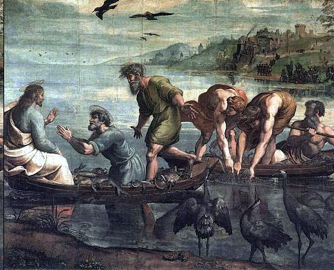
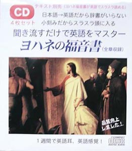

| 【音声付】聞き流すだけで英語をマスター ヨハネの福音書 初級～中級用 | |
| 小分割/和英順方式普及会 | |
| Kisosha (2013) | |
関連商品：辞書なしで英語がスラスラ読める ヨハネの福音書
ヨハネの福音書
バイブルも即、頭に入ってくる
従来の対訳方式の
わざらわしさを解消！（全章）
久保 有政 訳
Scripture quotations are from the Good News Bible text, in Today's English Version. Copyright (C) American Bible Society 1966, 1971, 1976. Used by permission.
（小分割/和英順方式英語教材）
【聞き流すだけで
英語をマスター】
日本語→英語の順、
細かい区切りで学ぶ英語教材
音声の再生について
■本文中の【音声再生】リンクをクリックしても、各章ごとの再生ができます（これはインターネット接続が必要です）。
目次 Table of Contents

Jesus and his disciples
◎辞書なしでも大体の意味はわかるようになっていますが、英単語の正確な意味や発音を知りたい場合は、Kindleの場合ですと、単語上を長タッチすると表示されます。
第１章
キリストは神の言である
彼は永遠に生きておられる
世界が創造される以前 Before the world was created, 言（キリスト）がすでに存在しておられた the Word already existed; （この「言」とは単なる音声ではなく、神の御思いや御本質の顕現をいい、キリストをさす）
このかたは神と共におられた he was with God, 彼は神に等しかった and he was the same as God. (キリストは「子なる神」でもあられる）
はじめから From thevery beginning 言は神と共におられた the Word was with God. （キリストは、父なる神と一体である）
彼を通して Through him 神はすべてのものを造られた God made all things; 造られたもののうち何一つとして not one thing in all creation 彼ぬきに造られたものはない was made without him.
言（キリスト）は、命の源であった The Word was the source of life, この命は人類に光をもたらした and this life brought light to mankind.
光は闇の中に輝いている The light shines in the darkness, そして闇はこれを消すことがなかった and the darkness has never put it out.
キリスト降誕に先立ち洗礼者ヨハネ現わる（A.D.26年）
神は、ひとりの伝達者を遣わされた God sent his messenger, ヨハネ（本福音書の著者ヨハネとは別人）という人である a man named John, ヨハネは来た who came 「光」（キリスト）について人々に語るために to tell people about the light, それはすべての人がメッセージを聞いてso that all should hear the message 信じるためである and believe.
ヨハネ自身は、光ではなかった He himself was not the light; 彼は、光について語るために来たのである he came to tell about the light．光とは、まことの光である This was the real light――世に現れた光 the light that comes into the world 人類の上に輝く光である and shines on all mankind.
言（キリスト) は世におられ The Word was in the world, 神は、彼を通して世を造られたのだが and though God made the world through him, 世は彼を認めなかった yet the world did not recognize him.
彼はご自分の国に来られたのに He came to his own country, 彼の民は彼を受け入れなかった but his own people did not receive him. しかし彼を受け入れ、信じた人々もいた Some, however, did receive him and believed in him; 彼はこの人々にお与えになった so he gave them 神の子となる特権を theright to become God's children.
この人々は、自然の方法によって神の子になったのではない They did not become God's children by naturalmeans, つまり人間の父親の子として生まれたのではない that is, by being born as the children of a human father; 神ご自身が彼らの父なのである God himself was their Father.
言は人となられた The Word became a human being そして恵みと、まこととに満ちて and, full of grace and truth, 私たちの間に住まわれた lived among us. 私たちは、このかたの栄光を見た We saw the glory, 御父 (父なる神) のひとり子として、このかたが受けられた栄光である the glory which he received as the Father's only son.
ヨハネは、このかたについて語った John spoke about him. ヨハネは叫んで言った He cried out,
「このかたこそ私が話していた人である "This is the one I was talking about 私は語った when I said, このかたは私の後に来られるが 'He comes after me, 私よりも偉大である but he is greater than I am, なぜなら because 彼は私が生まれる以前から存在しておられたのだ he existed before I was born.'" 」
このかたは、満ち満ちた恵みの中から Out of the fullness of his grace 私たちすべての者を祝福された he has blessed us all, 恵みに恵みを加えて giving us one blessing after another.
神はかつて律法 (イスラエルのおきて) を、モーセ（B.C.15世紀イスラエルの指導者）を通して与えられた God gave the Law through Moses, しかし恵みとまこととは but grace and truth イエス・キリストを通して来たのである came through Jesus Christ.
だれも神を見た者はいない No one has ever seen God. 唯一の御子 The only Son, すなわち神に等しく who is the same as God 父なる神のふところにおられるこのかたが and is at the Father's side, 神を説き明かされたのである he has made him known.
ヨハネより偉大な人物が来る
エルサレムにいるユダヤ人の権威者らは The Jewish authorities in Jerusalem 祭司とレビ族の人をヨハネのもとに送って sent some priests andLevites to John 尋ねた to ask him,
「あなたはどなたですか "Who are you?" 」
ヨハネは答えを拒まず John did not refuse to answer, オープンに、はっきりと語った but spoke out openly and clearly, saying:
「私は、メシヤ（来たるべき救い主）ではない "I am not the Messiah."」
「では誰なのですか "Who are you, then?" 」と彼らは尋ねた they asked. 「あなたは、エリヤ（終わりの日に先立って来ると予言された人物）ですか "Are youElijah?"」
「いいえ、違います "No I am not," 」
とヨハネは答えた John answered.
「あなたは、あの預言者（旧約聖書に予言された来たるべき大預言者）ですか "Are you the Prophet?" 」
と彼らは尋ねた they asked.
「違います "No,"」
とヨハネは答えた he replied.
「では教えてください "Then tell us あなたが誰なのか who you are,"」と彼らは言った they said. 「私たちは返答を持っていかなければなりません "We have to take an answer back 私たちを遣わした人々にです to those who sent us. あなたは自分について何と言われるのですか What do you say about yourself?" 」
ヨハネは、預言者イザヤ（B.C.8世紀）の言葉を引用して言った John answered by quoting the prophet Isaiah:
「私は "I am 『荒野で叫んでいる者の声』である 'the voice of someone shouting in the desert: まっすぐな道をつくれ Make a straight path 主がお通りになるために for the Lord to travel!'"」
ヨハネのもとに来た人々は The messengers,――パリサイ派（ユダヤの宗教的一派）から遣わされて来たのであるが who had been sent by thePharisees,――ヨハネに尋ねた then asked John,
「あなたがメシヤではなく "If you are not the Messiah 預言者でもないというなら nor the Prophet, なぜ洗礼を授けるのですか why do youbaptize?" 」
ヨハネは答えた John answered,
「私は水で洗礼を授けている "I baptize with water, しかしあなたがたの中に but among you あなたがたの知らないかたが立っておられるstands the one you do not know. 彼は私のあとに来られる He is coming after me, （彼の前では）私は彼のサンダルの紐をとく値打ちもない but I am not good enough even tountie his sandals."」
このことがあったのは、ベタニヤ町においてであった All this happened in Bethany ヨルダン川の東側の地である on the east side of the Jordan River, そこでヨハネは洗礼を授けていた where John was baptizing.
イエス現わる
翌日 The next day ヨハネは、自分のもとにイエスが来られるのを見て John saw Jesus coming to him, 言った and said,
「神の小羊（キリスト）がおられる "There is the Lamb of God, このかたが世の罪を取り除かれる のだ who takes away the sin of the world! このかたこそ、私がかねてから言っていたかたである This is the one I was talking about 私は言った when I said,
『私の後に、ひとりのかたが来られる 'A man is coming after me, 彼は私より偉大である but he is greater than I am, なぜならbecause 彼は私の生まれる以前からおられたからである he existed before I was born.' 』
私は初めわからなかった I did not know このかたが誰なのか who he would be, しかし私は来て but I came 水で洗礼を授けている baptizing with water それは彼のことを知らせるためなのだ in order to make him known イスラエルの人々に to the people of Israel."」
ヨハネはまた、このような証しをした And John gave this testimony:
「私は見た "I saw （神の）御霊が鳩のようにくだるのを the Spirit come down like a dove 天からくだり from heaven 彼の上にとどまるのを and stay on him. 私はまだわからなかった I still did not know 彼がそのかたであることを that he was the one, しかし水で洗礼を授けるために私を使わされた神は but God, who sent me to baptize with water, 私にこう言われたのである had said to me,
『あなたは見るであろう 'You will see 御霊がくだって the Spirit come down ひとりの者の上にとどまるのを and stay on a man; 彼こそ he is the one （神の）聖霊によって洗礼を授ける者である who baptizes with the Holy Spirit.'』
わたしはそれを見たのだ I have seen it," 」
とヨハネは言った said John, 「それゆえに私は言っている "and I tell you 彼こそ神の御子だと that he is the Son of God." 」
イエス、弟子をつくられる
翌日 The next day ヨハネは同じ場所に立っていた John was standing there again 彼の２人の弟子と共に with two of his disciples, そのときヨハネは見た when he saw イエスの通りかかられるのを Jesus walking by.
「神の小羊がおられる "There is the Lamb of God!"」
とヨハネは言った he said. ２人の弟子たちはこれを聞いて The two disciples heard him say this イエスについて行った and went with Jesus. イエスは振り返り Jesus turned, ２人がついて来るのを見て saw them following him, 尋ねられた and asked,
「あなたがたは何を探しているのか "What are you looking for?" 」
彼らは答えた They answered,
「あなたはどこに住んでおられるのですか "Where do you live, ラビよRabbi?"（ラビとは、先生のこと This word means "Teacher.")
「来て、見なさい "Come and see," 」
とイエスは言われた he answered. （これは午後４時頃のことであった It was then about four o'clock in the afternoon.）
そこで彼らは、イエスと共に行き So they went with him イエスの泊まっておられるところを見た and saw where he lived, 彼らはその日の残りの時間をすごした and spent the rest of that day イエスと共に with him. ２人のうち、１人はアンデレであった One of them was Andrew, シモン・ペテロの兄弟である Simon Peter's brother. すぐに彼は兄弟シモンを見つけ At once he found his brother Simon シモンに言った and told him,
「私たちはメシヤを見つけた "We have found the Messiah." 」( この言葉はキリストの意味である This word means "Christ.")
そしてアンデレは、シモンをイエスのもとに連れてきた Then he took Simon to Jesus. イエスはシモンを見て言われた Jesus looked at him and said,
「あなたの名は "Your name is ヨハネの子シモンだが Simon son of John, ケパと呼ばれるであろう but you will be calledCephas."」 (この名は「ペテロ」と同じで This is the same as Peter「岩」を意味する and means "a rock.")
ピリポとナタナエルもイエスの弟子になる
つぎの日 The next day イエスは、ガリラヤ地方へ行こうと決心された Jesus decided to go to Galilee. そしてピリポを見つけて He found Philip 言われた and said to him,
「私についてきなさい "Come with me!"」
(ピリポはベツサイダ出身である Philip was from Bethsaida, そこはアンデレや、ペテロも住んでいた町だ the town where Andrew and Peter lived.)
ピリポはナタナエルを見つけて Philip found Nathanael 言った and told him,
「私たちは見つけた "We have found モーセが律法の書の中に記したおかたを the one whom Moses wrote about in the book of the Law また預言者たちが記したおかたを and whom the prophets also wrote about. 彼の名はイエス He is Jesus ヨセフの子であり son of Joseph，ナザレ町から来たかたである from Nazareth."」
「ナゼレから何の良いものが出るだろうか "Can anything good come from Nazareth?"」
とナタナエルは尋ねた Natheanael asked.
「来て、見なさい "Come and see,"」
とピリポは言った answered Philip. イエスは、ナタナエルの来るのを見たとき When Jesus saw Nathanael coming to him, 彼に関して言われた he said about him,
「ここに真のイスラエル人がいる。"Here is a real Israelite; 彼の内には偽りが何もない there is nothing false in him!"」
ナタナエルはイエスに尋ねた Nathanael asked him,
「どうして私をご存知なのですか "How do you know me?"」
イエスは答えられた Jesus answered,
「私は見た "I saw you あなたがいちじくの木の下にいるのを when you were under the fig tree ピリポがあなたを呼ぶ前にである before Philip called you."」
「先生 "Teacher," 」とナタナエルは言った answered Nathanael, 「あなたは神の御子です "you are the Son of God! あなたはイスラエルの王です You are the King of Israel!" 」
イエスは言われた Jesus said,
「あなたが信じるのは "Do you believe 私が言ったからか just because I told you 私があなたを見たと I saw you いちじくの木の下にいたとき when you were under the fig tree? あなたは見るだろう You will see これよりもっと大きなことを much greater things than this!"」
そして皆に言われた And said to them,
「あなたがたに真実を告げよう "I am telling you the truth: あなたがたは見るであろう you will see 天が開かれるのを the heaven open そして神の天使らが and God's angels 人の子（キリストのこと）のうえに上り下りするのを going up and coming down on the Son of Man." 」
第２章
２日後 Two days later 結婚式があった there was a wedding ガリラヤ地方のカナ町においてである in the town of Cana inGalilee. イエスの母はそこにいた Jesus' mother was there, そしてイエスと弟子たちも and Jesus and his disciples 式に招かれていた had also been invited to the wedding.
(宴会で) ぶどう酒がなくなったとき When the wine had given out, イエスの母はイエスに言った Jesus' mother said to him,
「ぶどう酒がありません "They are out of wine."」
「あなたは言ってはいけません "You must not tell me 私が何をすべきかについては what to do." 」 とイエスは答えられた Jesus replied. 「私の時はまだ来ていないのです "My time has not yet come."」
するとイエスの母は召使たちに言った Jesus' mother then told the servants,
「彼の言うことは何でもしてあげてくださいね "Dowhatever he tells you."」。
ユダヤ人には、きよめの儀式に関するしきたりがあった The Jews have rules aboutritual washing, そのために and for thispurpose そこには石の水がめが６つ置いてあった six stone water jars were there, それぞれ20～30ガロン（１ガロン＝約3.8リットル）入る水がめである each one large enough to hold between twenty and thirty gallons. イエスは召使たちに言われた Jesus said to the servants,
「水がめに水を満たしなさい "Fill these jars with water."」
彼らは水がめを縁までいっぱいにした They filled them to the brim, イエスは彼らに言われた and then he told them,
「さあ水をくみなさい "Now draw some water out そして宴会の世話役のところに持っていきなさい and take it to the manin charge of the feast." 」
彼らは世話役に水を持っていった They took him the water, それはすでにぶどう酒に変わっていた which now had turned into wine, 世話役は味見した and he tasted it. 彼は知らなかった He did not know ぶどう酒がどこから来たのか where this wine had come from (もちろん、汲んだ召使たちは知っていたが but, of course, the servants who had drawn out the water knew); それで世話役は花婿を呼んで so he called the bridegroom 言った and said to him,
「だれでも最上のぶどう酒は初めに出すものだ "Everyoneelse serves the best wine first, そして客が十分飲んだあと and after the guests have drunk a lot, 普通のを出す he serves the ordinary wine. しかし君は But you 最上のぶどう酒を今までとっておいたわけだね have kept the best wine until now!"」
イエスはこの最初の奇跡を行なわれた Jesus performed this first miracle ガリラヤ地方のカナで in Cana in Galilee; 彼はご自分の栄光を現された there he revealed his glory, それで弟子たちはイエスを信じた and his disciples believed in him.
その後 After this, イエスとその母 Jesus and his mother, 兄弟たち brothers, また弟子たちは and disciples カペナウム町に行き went to Capernaum そこに数日間滞在した and stayed there a few days.
神殿で商売人を追い出される
過越の祭（かつてイスラエルがエジプトから脱出したことを記念する祭）のときが近づいたので It was almost time for thePassover Festival，イエスはエルサレムに行かれた so Jesus went toJerusalem.
エルサレムの神殿において There in the Temple イエスは見つけられた he found 人々が牛や、羊や、鳩を売っているのを men selling cattle, sheep, and pigeons, また両替人たちがすわっているのを and also the moneychangers sitting at their tables.
そこでイエスは、なわで鞭を作り So he made a whip from cords すべての動物を神殿から追い出された and drove all the animals out of the Temple, 羊も牛もである both the sheep and the cattle; イエスは両替人のテーブルをひっくり返し he overturned the tables of the moneychangers お金を散らされた and scattered their coins; また鳩を売っていた者に命令された and he ordered the men who sold the pigeons,
「それらを持って出ていけ "Take them out of here! 私の父の家を商売の家にするのをやめよ Stop making my Father's house amarketplace!"」
弟子たちは思い出した His disciples remembered （旧約）聖書にこう言われているのを that the scripture says,
「あなたの家に対する私の献身の思いが "My devotion to your house, 神よ O God, 私の内で火のように燃え上がります burns in me like a fire."」。
ユダヤ人の指導者たちは The Jewishauthorities 質問をたずさえてイエスのもとに戻ってきた came back at him with a question,
「あなたはどんな奇跡をなせますか "What miracle can you perform 私たちに示すためにです to show us こんなことをする権利があなたにあることを that you have the right to do this?" 」。
イエスは答えられた Jesus answered,
「この神殿をこわしてみなさい "Tear down this Temple, 私は３日でそれを建て直してみせよう and in three days I will build it again."」。
「３日で建て直すつもりですか "Are you going to build it again in three days?" 」彼らは尋ねた they asked him.「この神殿は建てるのに46年もかかったのですよ "It has taken forty-six years to build this Temple!" 」
しかしイエスの言われた「神殿」とは But the temple Jesus was speaking about ご自分の肉体のことであった was his body. それでイエスが死からよみがえられた時 So when he wasraised from death, 弟子たちはイエスがこれを言われたのを思い出し his disciples remembered that he had said this, 聖書を信じた and they believed thescripture そしてイエスの言われたことを and what Jesus had said.
イエスは人の心を知っておられる
イエスがエルサレムにおられたとき While Jesus was in Jerusalem 過越の祭の間 during the Passover Festival, 多くの人々がイエスを信じた many believed in him イエスのなされた奇跡を見て as they saw the miracles he performed. しかしイエスは、ご自分を人々におまかせにはならなかった But Jesus did not trust himself to them, イエスは彼らのすべてを知っておられたからである because he knew them all.
だれもイエスに、人に関して教える必要はなかった There was no need for anyone to tell him about them, イエスはご自身で知っておられたのである because he himself knew 人々の心にあることを what was in their hearts.
第３章
あるユダヤ人指導者がいた There was a Jewish leader ニコデモというnamedNicodemus，彼はパリサイ派（ユダヤ教の一派で厳格な戒律を重んじる）に属していた who belonged to theparty of thePharisees.
ある夜 One night ニコデモはイエスのもとに来て he went to Jesus 言った and said to him,
「ラビよ（先生）"Rabbi, 私たちは知っています we know あなたが神から遣わされた教師であることを that you are a teacher sent by God. 誰も行なうことはできません No one couldperform あなたがしておられるような奇跡は the miracles you are doing 神が共におられるのでなければunless God were with him." 」
イエスは答えられた Jesus answered,
「あなたに真実を告げよう "I am telling you the truth: 人はだれも神の王国（天国）を見ることはできない no one can see the Kingdom of God もう一度生まれるのでなければ unless he is born again."」
「大人になった者がどうやって "How can agrown man もう一度生まれることができるのですか be born again?" 」 ニコデモは尋ねた Nicodemus asked. 「母の胎に入ることなど到底できませんし "He certainly cannot enter his mother'swomb 二度生まれることなど and be born a second time!"」
「あなたに真実を告げよう "I am telling you the truth,"」イエスは答えられた replied Jesus, 「だれも神の王国に入ることはできない "that no one can enter the Kingdom of God (神の命の) 水と御霊とから生まれるのでなければ unless he isborn of water andthe Spirit．人は肉体的には両親から生まれる A person is born physically of human parents, しかし人は霊的には (神の) 御霊から生まれるのだ but he is born spiritually of the Spirit.
驚いてはいけない Do not be surprised 私が言ったからとて because I tell you 人はみな二度生まれなければならないと that you must all be born again. 風は自分の好むところに吹く The wind blowswherever it wishes; あなたたちはその音を聞くが you hear the sound it makes, あなたたちは知らない but you do not know それがどこから来て where it comes from どこへ行くかを or where it is going. 御霊から生まれる者もみな、それに似ている It is like that with everyone who is born of the Spirit."」
「どうしてそのようなことがあり得ましょうか "How can this be?" 」
とニコデモは尋ねた asked Nicodemus. イエスは答えられた Jesus answered,
「あなたはイスラエルのりっぱな教師なのに "You are a great teacher in Israel,これがわからないか and you don't know this? あなたに真実を告げよう I am telling you the truth: 私たちは自分の知っていることを話している we speak of what we know また自分の見たことを報告している and report what we have seen, それなのにあなたがたは誰もyet none of you 私たちの言うことを受け入れようとしない is willing to accept our message.
あなたがたは信じない You do not believe me 私が世のことについて語るときに when I tell you about the things of this world; それならどうしてあなたがたは信じるだろうか how will you ever believe me, then, 私が天のことについて語るときに when I tell you about the things of heaven?
誰も天にのぼった者はいない And no one has ever gone up to heaven 人の子（キリストをさす）以外には except the Son of Man, 彼は天から下って来た者である who came down from heaven."」
（預言者）モーセが青銅製のへびをかかげたように As Moses lifted up the bronze snake それを荒野で棒の上にかかげたように on a pole in the desert, 人の子 （キリスト）もまた in the same way the Son of Man （十字架の上に）上げられなければならない must be lifted up, （民数21:9参照） それは彼を信じるすべての人が so that everyone who believes in him 永遠の生命を持つためである may have eternal life.
神は世を、ひじょうに愛されたのでFor God loved the world so much ご自身のひとり子 (キリスト) をさえお与えになった that he gave his only Son, それは彼を信じるすべての人がso that everyone who believes in him 滅びずに may not die 永遠の生命を持つためである but have eternal life.
神が御子を世に遣わされたのは、その審判者とするためではなくFor God did not send his Son into the world to be its judge, その救い主とするためなのである but to be its savior.
御子を信じる者はだれもWhoever believes in the Son 裁かれない is not judged; しかし信じない者はみな but whoever does not believe すでに裁かれている has already been judged, 神のひとり子を信じなかったからである because he has not believed in God's only Son.
その裁きというのはこうである This is how the judgment works: 光（キリスト）が世に来たのに the light has come into the world, 人々は光よりも闇を愛している but people love the darkness rather than the light, その行ないが悪いからである because their deeds are evil.
悪を行なう者はみな Anyone who does evil things 光を憎み hates the light 光に来ない and will not come to the light, 自分の悪い行ないが明るみに出されたくないからだ because he does not want his evil deeds to be shown up. しかし真理を行なう者は皆 But whoever doeswhat is true 光のもとに来る comes to the light それは光によって明らかにされるためであるin order that the light may show その人のしたことが that what he did 神への従順によったということを was in obedience to God.
キリストは栄えヨハネは衰える
そののち After this, イエスと弟子たちは Jesus and his disciples ユダヤ地方へ行った went to the province of Judea, そこでイエスは弟子たちとしばらく過ごし where he spent some time with them 洗礼を授けておられた and baptized.
(洗礼者) ヨハネもアイノンの地で洗礼を授けていた John also was baptizing in Aenon, サリムからほど遠くない所である not far from Salim, そこには豊富な水があったからだった because there was plenty of water in that place. 人々は (つぎつぎに) 彼のもとにやって来た People were going to him, ヨハネは彼らに洗礼を授けていた and he was baptizing them.
(これはヨハネが投獄される以前のことである This was before John had been put in prison.)
ヨハネの幾人かの弟子たちが Some of John's disciples あるユダヤ人と論争を始めた began arguing with a Jew きよめの儀式についてである about the matter of ritual washing. そこで彼らはヨハネのもとに行って So they went to John 言った and told him,
「先生 "Teacher, この前あなたと共におられたかたがいましたでしょう you remember the man who was with you ヨルダン川の東側でです on the east side of the Jordan, あなたが証言なさったかたです the one you spoke about? じつは Well, あのかたが洗礼を授けておられるのです he is baptizing now, そして皆あのかたのもとへ行ってしまいます and everyone is going to him!" 」
ヨハネは答えた John answered,
「だれも何も持つことはできない "No one can have anything 神から与えられるのでなければunless God gives it to him. あなたがた自身が、私の証人である You yourselves are my witnesses 私は言った that I said,
『私はメシヤではなく 'I am not the Messiah，その前に遣わされた者である but I have been sent ahead of him.'』
花婿（キリストをさす）は The bridegroom 花嫁の属している相手の人である is the one to whom the bride belongs; しかし花婿の友人は but the bridegroom's friend, 近くに立ち、耳を傾け who stands by and listens, 花婿の声を聞いて喜ぶ is glad when he hears the bridegroom's voice. これと同じように私の幸福も This is how my own happiness 満たされているのだ is made complete. 彼はさらに重んじられなければならない He must become more important 一方で私は衰えることになる while I become less important."」
キリストは神から来られたかた
上から来るかた（キリスト）は He who comes from above すべてにまさって偉大である is greater than all. 地から出る者は He who is from the earth 地に属し belongs to the earth 地上的事柄を語る and speaks about earthly matters, しかし天から来るかたは but he who comes from heaven すべての上におられる is above all.
このかたは、見たこと聞いたことを語られるが He tells what he has seen and heard, だれもそのメッセージを受け入れない yet no one accepts his message. しかし彼のメッセージを受け入れる者はみな But whoever accepts his message それによって確証しているのである confirms by this 神は真実なかただと that God is truthful.
神がお遣わしになったかたは The one whom God has sent 神の言葉を話される speaks God's words, 神がご自身の霊を一杯に注がれるからである because God gives him the fullness of his Spirit. 御父（神）は御子（キリスト）を愛しておられ The Father loves his Son 万物を彼の手にお渡しになった and has put everything in his power.
御子を信じる者はみな Whoever believes in the Son 永遠の生命を持つ has eternal life; 御子に従わない者はみな whoever disobeys the Son いのちを持たず will not have life, 神の裁きのもとにとどまるであろう but will remain under God's punishment.
第４章
パリサイ派の人々（ユダヤ教の一派で厳格な戒律を重んじる）は耳にした The Pharisees heard イエスが（洗礼者）ヨハネより多くの弟子を獲得し洗礼を授けていることを that Jesus was winning and baptizing more disciples than John. （実際は Actually, イエスご自身は洗礼を授けず Jesus himself did not baptize anyone; 弟子たちが授けていたのであるが only his disciples did.)
イエスはこれを知られると So when Jesus heard what was being said, ユダヤ地方を去り he leftJudea ガリラヤ地方へ戻られた and went back to Galilee; 途中 on his way there サマリヤ地方を通らねばならなかった he had to go through Samaria.
サマリヤ地方において In Samaria イエスはスカルという町に来られた he came to a town named Sychar, この町は遠くない which was not far ヤコブ (イスラエル民族の父祖) が息子ヨセフに与えた地所からは from the field that Jacob had given to his son Joseph.
この町にはヤコブの井戸があった Jacob's well was there, イエスは旅の疲れで and Jesus, tired out by the trip, 井戸のかたわらにすわっておられた sat down by the well. 時は正午頃であった It was about noon.
ひとりのサマリヤ人の女が A Samaritan woman 水をくみに来た came to draw some water, イエスは彼女に言われた and Jesus said to her,
「水を飲ませてください "Give me a drink of water."」 (このとき弟子たちは町へ行っていた His disciples had gone into town 食糧の買い出しである to buy food.)
女は答えた The woman answered,
「あなたはユダヤ人で " You are a Jew, 私はサマリヤ人です and I am a Samaritan どうして私に水を求めたりできるのですか――so how can you ask me for a drink?" 」
(ユダヤ人は、コップや鉢を共にしなかったのである Jews will not use the same cups and bowls サマリヤ人とは that Samaritans use.)
イエスは言われた Jesus answered,
「もしあなたが神のお与えになるものを知っていさえすれば "If you only knew what God gives また水を求めている者が誰であるかを知っていれば and who it is that is asking you for a drink，あなたのほうで彼 (イエス) に求めたであろう you would ask him, そして彼はあなたに命の水を与えたであろう and he would give you life-giving water."」
「先生 "Sir," 」女は言った the woman said, 「あなたはバケツを持っておられないし "you don't have a bucket, この井戸は深いのです and the well is deep. どこからその命の水を得るのですか Where would you get that life-giving water?
私たちの先祖ヤコブが It was our ancestor Jacob この井戸を私たちにくれました who gave us this well; 彼も彼の子も家畜も he and his sons and his flocks みなこの井戸から飲みました all drank from it. あなたはヤコブよりも偉いと言うわけではないでしょう You don't claim to be greater than Jacob, do you?" 」
イエスは言われた Jesus answered,
「誰でもこの水を飲む者は "Whoever drinks this water また渇く will get thirsty again,しかし私が与える水を飲む者は誰も but whoever drinks the water that I will give him 決して渇かない will never be thirsty again. 私が与える水は The water that I will give him その人の内で泉となる will become in him a spring その泉は命の水を供給し which will provide him with life-giving water 永遠の生命を与える and give him eternal life."」
「先生 "Sir," 」女は言った the woman said, 「その水を私に下さい "give me that water! そうすれば私は二度と渇くことがありません Then I will never be thirsty again, ここに水をくみに来なくてすみます nor will I have to come here to draw water." 」
「行って、あなたの夫を呼びなさい "Go and call your husband," 」イエスは言われた Jesus told her, 「そして戻ってきなさい "and come back."」
「私には夫はありません "I don't have a husband,"」と彼女は答えた she answered. イエスは言われた Jesus replied,
「その通り "You are right あなたに夫はない when you say you don't have a husband. あなたは５度結婚したが You have been married to five men, 今あなたと住んでいる男は and the man you live with now 実際にはあなたの夫ではない is not really your husband. あなたの言うことはもっともだ you have told me the truth." 」
「あなたは預言者ですね "I see you are a prophet, sir,"」 女は言った the woman said. 「私の先祖らは "my Samaritan ancestors この山で神を礼拝しました worshiped God on this mountain, しかしあなたがたユダヤ人は言っています but you Jews say エルサレムこそ that Jerusalem 神を礼拝する場所であると is the place where we should worship God." 」
イエスは彼女に言われた Jesus said to her,
「女よ、私を信じなさい "Believe me, woman, やがて時が来るのだ the time will come 人々が御父（神) を礼拝するのが、この山でも、エルサレムでもないという時が when people will not worship the Fathereither on this mountain or in Jerusalem.
あなたがたサマリヤ人は You Samaritans 本当には知らない do not really know 自分の拝んでいるかたを whom you worship; しかし私たちユダヤ人は知っている but we Jews know whom we worship, 救いはユダヤ人から出るからである because it is from the Jews that salvation comes.
その時は来つつあり But the time is coming すでに来ている and is already here, その時 when 神の御霊の力により by the power of God's Spirit 人々は御父を御父として礼拝し people will worship the Father as he really is, 神の求めておられる真の礼拝をささげるであろう offering him the true worship that he wants. 神は霊である God is Spirit, 神の霊の力によってのみ and only by the power of his Spirit 人々は神をありのままに礼拝できるのだ can people worship him as he really is." 」
女はイエスに言った The woman said to him,
「私は知っています "I know やがてメシヤが来られることを that the Messiah will come, メシヤが来られれば and when he comes, すべてのことを私たちに教えてくださるでしょう he will tell us everything." 」
イエスは言われた Jesus answered,
「私がそれである "I am he, あなたと話しているこの私が I who am talking with you."」
イエスの食物
このとき At that moment イエスの弟子たちが戻ってきた Jesus' disciples returned, 彼らはひどく驚いた and they were greatly surprised イエスが女性と話しておられるのを見たからである to find him talking with a woman. しかし誰も彼女には聞かなかった But none of them said to her,
「あなたは何を求めているのか "What do you want?"」
と。またイエスにも尋ねなかった or asked him,
「なぜ彼女と話しておられるのですか "Why are you talking with her?" 」
と。女は水がめを置いて Then the woman left her water jar, 町へ戻った went back to the town, そして人々に言った and said to the people there,
「来て "Come 会ってください and see 私がしてきたことをすべて言い当てたかたに the man who told me every thing I have ever done. このかたがメシヤ(救い主=キリストでしょうか Could he be theMessiah?" 」
それで人々は町を出て So they left the town イエスのもとへ行った and went to Jesus.
そのころ In the meantime 弟子たちはイエスにお願いしていた the disciples were begging Jesus,
「先生 "Teacher, 何か召し上がってください have something to eat!"」
しかしイエスは言われた But he answered,
「私には食物があるのだ "I have food to eat あなたがたの知らない食物が that you know nothing about."」
それで弟子たちは So the disciples 互いに言い合い始めた started asking among themselves，
「だれか食べるものを持ってきたのだろうか "Could somebody have brought him food?"」
「私の食物とは "My food,"」 イエスは言われた Jesus said to them, 「私を遣わされたかたのみこころに従い "is to obey the will of the one who sent me そのかたが下さった仕事を成し遂げることである and to finish the work he gave me to do. あなたがたには諺がある You have a saying, 『あと４か月ある 'Four more months 収穫はそれからだ and then the harvest.' 』
と。しかしあなたがたに言う But I tell you, 畑をよく見なさい take a good look at the fields; 穀物（福音を聞いて救われる人々）は熟し the crops are now ripe 刈り入れられるばかりになっている and ready to be )harvested! 刈る者は The man who reaps the harvest 報酬を受けつつあり is being paid 永遠の生命への実を集めている and gathers thecrops for eternal life; それで種をまく者も so the man whoplants 刈る者も and the man who reaps 共に喜ぶ will be glad together.
というわけでこの諺は本当だ For the saying is true,
『ひとりが種をまき 'One man plants, 他の者が刈り取る another man reaps.'』
私はあなたがたを遣わした I have sent you 収穫を刈り取るために to reap a harvest あなたがたが働かなかった場所においてである in a field where you did not work; 他の人々が労苦し others worked there, その労苦からあなたがたは実を得ているのだ and youprofit from their work." 」
町のサマリヤ人の多くは Many of the Samaritans in that town イエスを信じた believed in Jesus 女がこう言ったからである because the woman had said,
「あのかたは私がしてきたことをすべて言い当てました "He told me everything I have ever done."」。
そこでサマリヤ人らがイエスのもとに来たとき So when the Samaritans came to him, 彼らはイエスにお願いした theybegged him 自分たちのところに滞在してくださるようにと to stay with them, イエスはそこに２日間滞在された and Jesus stayed there two days.
さらに多くの人々が信じた Many more believed イエスの言葉によって because of his message, 人々は女に言った and they told the woman,
「私たちは今信じています "We believe now, あなたが話してくれた事によってではありません not because of what you said, 自分で聞いたからです but because we ourselves have heard him, 私たちは知っています and we know あのかたこそ世の救い主です that he really is theSavior of the world."」。
第２の奇跡
２日過ごした後 After spending two days there, イエスはそこを去り Jesus left ガリラヤ地方へ行かれた and went to Galilee. イエスご自身こう言っておられたからであるFor he himself had said,
「預言者はうやまわれない "A prophet is not respected 自分の故郷では in his own country." 」
ガリラヤ地方に着かれたとき When he arrived in Galilee, 人々はイエスを歓迎した the people there welcomed him, 人々はエルサレムの過越の祭に行って because they had gone to the Passover Festival in Jerusalem すべてのことを見ていたからである and had seen everything 祭のあいだ中イエスのなされたことを that he had done during the festival.
それからイエスはガリラヤのカナ町へ戻られた Then Jesus went back to Cana in Galilee, イエスが水をぶどう酒に変えた所であるwhere he had turned the water into wine. そこにひとりの役人がいた A government official was there 彼の息子はカペナウム町で病気であった whose son was sick in Capernaum.
イエスがユダヤ地方からガリラヤ地方に来られたと聞いて When he heard that Jesus had come from Judea to Galilee, 役人はイエスのもとへ行き he went to him カペナウム町へ来てくださいと願った and asked him to go to Capernaum また息子をいやして下さるようにと and heal his son, 息子は死にかかっていたのである who was about to die. イエスは彼に言われた Jesus said to him,
「あなたがたは信じないのだな "None of you will ever believe 奇跡や不思議を見ないかぎりはunless you see miracles and wonders."」
「主よ "Sir," 」 役人は言ったreplied the official, 「私と来てください "come with me 子どもが死なないうちに before my child dies." 」
イエスは彼に言われた Jesus said to him,
「行きなさい "Go; あなたの息子は生きるのだ your son will live!" 」
男はイエスの言葉を信じて The man believed Jesus' words 帰った and went. その帰途 On his way home 彼のしもべたちが彼に出会って his servants met him 知らせた with the news,
「ご子息は快方に向かいました "Your boy is going to live!" 」
彼は尋ねた He asked them 息子が快方に向かったのはいつかを what time it was when his son got better, しもべたちは答えた and they answered,
「きのうの午後１時です "It was one o'clock yesterday afternoon そのとき熱がひきました when the fever left him." 」
すると父親は思い出した Then the father remembered それはまさにイエスが言われた時刻だった that it was at that very hour when Jesus had told him, 「あなたの息子は生きるのだ "Your son will live."」と。
それで彼と彼の家族はみな信じた So he and all his family believed. これはイエスのなされた２度目の奇跡であった This was the second miracle that Jesus performed ユダヤ地方からガリラヤ地方に来られてなされたのである after coming from Judea to Galilee.
第５章
この後 After this, イエスはエルサレムへ行かれた Jesus went to Jerusalem 宗教的祭りのためである for a religious festival.
エルサレムの羊の門の近くに Near the Sheep Gate in Jerusalem 池があり there is a pool ５つの回廊がついていた with five porches; ヘブル語で in Hebrew ベテスダと呼ばれる池である it is called Bethzatha. （天使が水をかき回した時に病人が飛び込むと、病気がいやされるという信仰が、その池にあった）
大勢の病人が A large crowd of sick people 回廊に伏せっていた were lying on the porches 盲人や -the blind, 足なえ the lame, 麻痺した者などである and the paralyzed. そこにひとりの男がいた A man was there 彼は病気であった who had been sick 38年間も for thirty-eight years.
イエスは彼が伏せているのをご覧になった Jesus saw him lying there, また知っておられた and he knew そんなにも長く病気であることを that the man had been sick for such a long time; それで彼に尋ねられた so he asked him,
「よくなりたいか "Do you want to get well?" 」
病人は答えた The sick man answered,
「主よ "Sir, 私には誰もいません I don't have anyone here 池に入れてくれる人が to put me in the pool 水がかき回された時にですwhen the water is stirred up; 私が入ろうとする間に while I am trying to get in, 他の人が最初に入ってしまうのです somebody else gets there first." 」
イエスは彼に言われた Jesus said to him,
「起きて "Get up, 敷物を取り上げ pick up your mat, 歩きなさい and walk." 」
ただちにその男は Immediately the man よくなった got well; 彼は敷物を取り上げ he picked up his mat 歩き出した and started walking.
これが起きた日は The day this happened 安息日であった was a Sabbath, それでユダヤ人の権威者らは so the Jewish authorities いやされた男に言った told the man who had been healed,
「きょうは安息日だ "This is aSabbath, だから律法違反だ and it is against our Law あなたが敷物を運ぶのは for you to carry your mat."」
彼は答えた He answered,
「私をよくしてくださったかたが "The man who made me well 言われたのです told me 敷物を取り上げて歩けと to pick up my mat and walk."」
彼らは尋ねた They asked him,
「誰なのか "Who is the man あなたにそうしろと言ったのは who told you to do this?"」
しかし、いやされた人は But the man who had been healed イエスのことを知らなかった did not know who Jesus was, そこには大勢の人々がいて for there was acrowd in that place, イエスはそっと立ち去られたからである and Jesus had slipped away.
私は常に働く
その後 Afterward, イエスは彼を見つけられた Jesus found him 神殿においてである in the Temple そして言われた and said,
「聞きなさい "Listen, あなたはよくなった you are well now; もう罪を犯してはいけない so stop sinning さもないと or もっと悪いことが something worse あなたに起こるかも知れない may happen to you."」
男は去って Then the man left ユダヤ人の権威者らに告げた and told the Jewish authorities 自分をいやしたのはイエスであると that it was Jesus who had healed him. このため彼らは So they イエスを迫害し始めた began to persecute Jesus,
イエスがこのいやしを安息日になされたからである because he had done this healing on a Sabbath. （当時の宗教指導者たちは、細々とした規定を旧約聖書の律法につけ加えて、安息日にしてはならない数々の事柄を定めていた） イエスは彼らに答えられた Jesus answered them,
「私の父 (神) はいつも働いておられる "My Father is always working, 私も働かなければならない and I too must work."」
この言葉は This saying ユダヤ人の権威者らをかりたてた made the Jewish authorities ますます all the more イエスを殺す決意にであるdetermined to kill him; イエスは安息日を破っておられただけでなく not only had he broken the Sabbath law, 神をご自分の父であると言い but he had said that God was his own Father こうして and in this way ご自分を神と等しくしておられたからである had made himself equal with God. そこでイエスは彼らに答えられた So Jesus answered them,
「私はあなたがたに真実を告げる "I tell you the truth: 子（イエスご自身）は the Son 自分からは何もできない can do nothingon his own; 御父のしておられることを見て行なうのみである he does only what he sees his Father doing. 御父のなされることを What the Father does, 子も行なうのだ the Son also does.
それは御父が子を愛し For the Father loves the Son 子に示されるからである and shows him 御父のしておられることすべてを all that he himself is doing. 御父は子に示される He will show him これより大きなわざを even greater things to do than this, それであなたがたはみな驚くだろう and you will all be amazed.
ちょうど御父が Just as the Father 死人を生かし raisesthe dead 命をお与えになるように and gives them life, 子もまた in the same way the Son 命を与える gives life 与えたいと思う者に to those he wants to.
御父ご自身は誰をも裁かない Nor does the Father himself judge anyone. 御父は子にお与えになったのだ He has given his Son 裁きの全権を the full right to judge, それはすべての者が so that all 子を敬うためである will honor the Son 御父を敬うのと同じくin the same way as they honor the Father. 子を敬わない者は皆Whoever does not honor the Son 子を遣わされた御父をも敬わない does not honor the Father who sent him.
「あなたがたに真実を告げよう "I am telling you the truth: 誰でも whoever 私の言葉を聞いて hears my words 私を遣わされたかたを信じる者は and believes in him who sent me 永遠の生命を持つ has eternal life.
その人は裁かれることがなく He will not be judged, すでに移っているのである but has already passed 死から命へと from death to life. あなたがたに真実を告げよう I am telling you the truth: 時が来ようとしている the time is coming いやすでに来ているのだ -the time has already come 死人が -when the dead 神の子（キリスト）の声を聞き will hear the voice of the Son of God, 聞く者が and those who hear it 生きるという時が will come to life.
ちょうど御父が Just as the Father 命の源であられるように is himself the source of life，御父は子をも命の源にしてくださったのである in the same way he has made his Son to be the source of life.
そして御父は子にお与えになった And he has given the Son 裁きの権を the right to judge, なぜなら子は because he 人の子だからである is the Son of Man. このことに驚いてはいけない Do not be surprised at this; 時が来ようとしている the time is coming 死人が子の声を聞き when all the dead will hear his voice 墓から出てくる時が and come out of their graves:
（その時）善を行なった者は those who have done good よみがえって生き will rise and live, 悪を行なった者は and those who have done evil よみがえって有罪宣告を受けるであろう will rise and be condemned.
イエスの権威は父なる神の権威による
「私は何事も行なうことができない "I can do nothing 自分の権威では on my own authority; ただ神が言われるように裁くだけである I judge only as God tells me, だから私の裁きは正しい so my judgment is right, 私が自分の望むことをするのではなく because I am not trying to do what I want, 私を遣わされたかたの望むことだけをなすからである but only what he who sent me wants.
「もし私が自分のことを証言するのなら "If I testify on my own behalf, 私の言うことは what I say 真実の証言としては受け入れられない is not to be accepted as realproof. しかしほかのかたがいる But there is someone else 私について証言するかたが who testifies on my behalf, そして私は知っている and I know このかたが私について言われることは that what he says about me 真実であるとis true.
(洗礼者) ヨハネに、あなたがたは人をやったが John is the one to whom you sent your messengers, 彼は真理について証言した and he spokeon behalf of the truth. これは私が人の証言を必要とするということではない It is not that I must have a man's witness; 私がこれを言うのは I say this ただあなたがたが救われるためである only in order that you may be saved.
ヨハネはともしびのようであり John was like a lamp, 燃えて輝いた burning and shining, それであなたがたは願っていた and you were willing しばらくの間 for a while 彼の光を楽しむことを to enjoy his light.
しかし私には証言がある But I have a witnesson my behalf ヨハネの残した証言よりすぐれたものである which is even greater than the witness that John gave: それは私のしているわざ what I do, すなわち that is, 御父が私にお与えになったわざなのだ the deeds my Father gave me to do, これが私について証言し these speak on my behalf 示している and show 御父が私を遣わされたことを that the Father has sent me.
私を遣わされた御父もまた And the Father, who sent me, 私について証言される also testifies on my behalf. あなたがたはその御声を聞いたことがなく You have never heard his voice 御顔を見たこともない or seen his face, また御教えを心にとどめてもいない and you do not keep his message in your hearts, それはあなたがたが信じないからである for you do not believe 御父の遣わされた者を in the one whom he sent.
あなたがたは聖書を学んでいる You study the Scriptures, その中に永遠の生命を見出せると思うからだ because you think that in them you will find eternal life. その聖書が私について述べているのである And these very Scriptures speak about me! なのにあなたがたは Yet you are 命を得るために私のもとに来ようとはしない not willing to come to mein order to have life.
「私は人の栄誉を求めない "I am not looking for humanpraise. ただ私は知っている But I know あなたがたがどのような人々であるかを what kind of people you are, あなたがたの心には神への愛がない and I know that you have no love for God in your hearts.
私は来た I have come 御父の権威によって with my Father's authority, しかしあなたがたは私を受け入れなかった but you have not received me; 誰かが自分の権威によって来ると when, however, someone comes with his own authority, 受け入れるのにである you will receive him.
あなたがたは好む You like 互いに栄誉を受けることを to receive praise from one another,しかしあなたがたは勝ち得ようとしない but you do not try to win おひとりの神からの栄誉をpraise from the one who alone is God; それならどうして how, then, 私を信じることができようか can you believe me?
しかし思ってはならない Do not think, however, あなたがたを御父に訴える者は私であると that I am the one who will accuse you to my Father. モーセこそ Moses, あなたがたが望みを置いているモーセこそが in whom you have put your hope, その人なのだ is the very one 彼があなたがたを訴える who will accuse you.
もしあなたがたが真にモーセを信じたならば If you had really believed Moses, 私をも信じたであろう you would have believed me, モーセは私について書いたのだから because he wrote about me. しかしあなたがたはモーセの書いたことを信じないのだから But since you do not believe what he wrote, どうして信じることができよう how can you believe 私の言うことを what I say?" 」
第６章
この後 After this, イエスはガリラヤ湖を渡られた Jesus went across Lake Galilee (この湖はテベリヤ湖とも言う or, LakeTiberias, as it is also called.)
大勢の群衆がイエスにつき従っていた A large crowd followed him, 病人のいやしの奇跡を見たからである because they had seen his miracles of healing the sick. イエスは丘に登り Jesus went up a hill 弟子たちと共にすわられた and sat down with his disciples. 過越の祭が近づいている時であった The time for the Passover Festival was near.
イエスはあたりを見渡し Jesus looked around 大勢の群衆がご自分のほうに来るのをご覧になった and saw that a large crowd was coming to him, それでピリポに言われた so he asked Philip,
「どこで充分な食糧を買えるだろうか "Where can we buy enough food この人々全員に食べさせるために to feed all these people?" 」 (イエスがこれを言われたのは He said this ピリポを試すためである to test Philip; 実際はすでに知っておられた actually he already knew ご自分のしようとしておられることを what he would do.)
ピリポは答えた Philip answered,
「めいめいが少しずつ取るにしても "For everyone to have even a little, 銀貨200枚以上いるでしょう it would take more than two hundred silver coins 充分なパンを買うには to buy enough bread."」
別の弟子 Another one of his disciples, アンデレは Andrew, シモン・ペテロの兄弟であるが who was Simon Peter's brother, 言った said,
「ここに少年がいます "There is a boy here 彼は持っています who has 大麦のパンを５つ five loaves of barley bread それに魚を２匹 and two fish. しかしそれではもちろん充分ではありません But they will certainly not be enough この人々には for all these people." 」
「人々をすわらせなさい "Make the people sit down,"」イエスは言われた Jesus told them. (そこにはたくさんの草が生えていた There was a lot of grass there.) それで人々は皆すわった So all the people sat down; (成人男子だけでも) 約５千人はいたthere were about five thousand men.
イエスはパンを取り Jesus took the bread, 神に感謝をささげ gave thanks to God, それを分配された and distributed it すわっている人々にである to the people who were sitting there. 魚も同じようにされた He did the same with the fish, 人々は皆欲しいだけ食べた and they all had as much as they wanted. 人々が満腹になった時 When they were all full, イエスは弟子たちに言われた he said to his disciples,
「残ったパンの切れはしを集めなさい "Gather the pieces left over; 少しも無駄にしないように let us notwastea bit." 」
弟子たちは集めると So they gathered them all 12のかごがいっぱいになった and filled twelve baskets パン切れの残りでである with the pieces left over 人々が食べた５つの大麦のパンから出たのである from the five barley loaves which the people had eaten. イエスがなされたこの奇跡を見て Seeing this miracle that Jesus had performed, 人々は言った the people there said,
「まさしくこの人は "Surely this is 世に来たるべき預言者だ the Prophet who wasto come into the world!" 」
イエスは知っておられた Jesus knew 人々が来ようとしていることを that they wereabout to come またイエスをとらえようとしていることを andseize him イエスを無理やり王にするために in order to make him king by force; それでイエスは再び退かれた so he went off again ひとり山に to the hills by himself.
イエス、水の上を歩かれる
夕方になって When evening came, イエスの弟子たちは Jesus' disciples 湖畔に降り went down to the lake, 舟に乗り込んだ got into a boat, そして湖を渡って戻った and went back across the lake カペナウム町へ toward Capernaum.
夜になったが Night came on, イエスはまだ彼らの所に来ておられなかった and Jesus still had not come to them. すでに強風が吹き荒れ By then a strong wind was blowing 波は荒れていた andstirring up the water.
弟子たちは３～４マイルこぎ出していた The disciples had rowed about three or four miles その時彼らは見た when they saw イエスが水面を歩かれるのを Jesus walking on the water, 舟に近づいて来られたのである coming near the boat, 弟子たちは恐れた and they were terrified.
「恐れるな "Don't be afraid," 」とイエスは言われた Jesus told them, 「私だ "it is I!" 」
それで彼らは喜んでイエスを舟に迎えた Then they willingly took him into the boat, 舟はすぐ目的地に着いた and immediately the boat reached land at the place they wereheading for.
翌日 Next day 湖の向こう岸にいた群衆は the crowd which had stayed on the other side of the lake 思い出した realized そこに一隻のボートがあったことを that there had been only one boat there. 彼らは知っていた They knew イエスはそれに乗り込まれなかった that Jesus had not gone in it with his disciples, 弟子たちだけが舟で去ったのだ but that they had left without him.
他の舟が Other boats, テベリヤ町から which were from Tiberias, 岸辺にやって来た came to shore そこは近かった near the place 主が感謝をささげたのち群衆がパンを食べた場所に where the crowd had eaten the bread after the Lord had given thanks.
群衆は、イエスがそこにおられないのを見ると When the crowd saw that Jesus was not there,また弟子たちもいないので nor his disciples, これらの舟に乗り込み they got into those boats カペナウム町へ向かった and went to Capernaum, イエスを捜して looking for him.
私は命のパンである
人々はイエスを見つけた When the people found Jesus 湖の向こう岸で on the other side of the lake, そのとき人々はイエスに言った they said to him,
「先生 "Teacher, いつここに来られたのですか when did you get here?"」イエスは答えられた Jesus answered, 「あなたがたに真実を告げよう "I am telling you the truth: あなたがたは私を捜しているが you are looking for me それはパンを食べ because you ate the bread 欲しいものを得たからだ and had all you wanted, 私の奇跡を理解したからではない not because you understood my miracles.
腐敗する食物のために働くのは、よしなさい Do not work for food that spoils; むしろ instead, 永遠の生命にいたる食物のために働きなさい work for the food thatlasts for eternal life. この食物こそ This is the food 人の子 (キリスト) があなたがたに与えるものである which the Son of Man will give you, 神である御父は because God, the Father, 人の子を認証されたのである has put his mark ofapproval on him."」
それで人々はイエスに尋ねた So they asked him,
「私たちは何ができるでしょうか "What can we do 神がして欲しいと願っておられることをするために in order to do what God wants us to do?" 」
イエスは答えられた Jesus answered,
「神があなたがたにして欲しいと願っておられることは "What God wants you to do 神がお遣わしになった者（キリスト）を信じることである is to believe in theone he sent." 」
彼らは言った They replied,
「あなたはどんな奇跡を見せてくれますか "What miracle will you perform 私たちが見て so that we may see it あなたを信じるために and believe you? 何をしてくれますか What will you do?
私たちの先祖は Our ancestors 荒野でマナ（神から与えられた食物――出エ16:31 ）を食べました ate manna in the desert, 聖書は言っています just as the scripture says,
『彼（モーセ）は人々に与えた 'He gave them 天からのパンを bread from heaven 食物として to eat.'" 』」
「あなたがたに真実を告げよう "I am telling you the truth,"」イエスは言われた Jesus said. 「モーセがあなたがたに与えたのは "What Moses gave you 天からのパンではない was not the bread from heaven; 私の父が it is my Father あなたがたに天からのまことのパン (キリスト) を与えるのだ who gives you the real bread from heaven. 神のお与えになるパンとはFor the bread that God gives 天から下って来た者のことである is he who comes down from heaven また世に命を与える者である and gives life to the world."」
「先生 "Sir," 」彼らはイエスに尋ねた they asked him, 「そのパンをいつも私たちにください "give us this bread always." 」
「私が命のパンである "I am the bread of life,"」イエスは言われた Jesus told them. 「私に来る者は "He who comes to me 決して飢えず will never be hungry; 私を信じる者は he who believes in me 決して渇くことがない will never be thirsty. 私は言った Now, I told you あなたがたは私を見たのに that you have seen me 信じようとしないと but will not believe.
父が私にお与えになる者は皆 Everyone whom my Father gives me 私のもとに来る will come to me. 私は決して見捨てない I will never turn away 私のもとに来る者を anyone who comes to me, なぜなら私は天から下って来た because I have come down from heaven 自分の思いを行なうためにではなく to do not my own will 私を遣わされたかたのみこころを行なうためにである but the will of him who sent me.
私を遣わされたかたのみこころは And it is the will of him who sent me 私が失わないことなのだ that I should not lose 御父が私に下さった者の誰をも any of all those he has given me, むしろ彼らを復活させることである but that I should raise them all to life 終わりの日に on the last day.
私の父の望みは For what my Father wants 子 (キリスト) を見て信じるが皆 is that all who see the Son and believe in him 永遠の生命を持つことである should have eternal life. 私は彼らをよみがえらせる And I will raise them to life 終わりの日に on the last day."」
イエスは命のパン
人々は不平を言い始めた The people started grumbling イエスについて about him イエスがこう言われたからである because he said,
「私は天から下ってきたパンである "I am the bread that came down from heaven." 」
それで人々は言った So they said,
「この男はイエスといい "This man is Jesus ヨセフの息子ではないか son of Joseph, isn't he? 私たちは知っている We know 彼の父も母も his father and mother. 一体どうして How, then, 彼は今言うのか does he now say 天から下って来たと he came down from heaven?" 」
イエスは答えられた Jesus answered,
「互いにつぶやくのはやめなさい "Stop grumbling among yourselves. だれも私のもとに来ることはできない No one can come to me 私を遣わされた御父が unless the Father who sent me 引き寄せてくださるのでなければ draws him to me; 私は私のもとに来た者をよみがえらせる and I will raise him to life 終わりの日に on the last day. 預言者たちはこう書いた The prophets wrote,
『人々はみな神によって教えられるであろう 'Everyone will be taught by God.'』
と。だれでも Anyone 御父から聞いて who hears the Father 御父から学ぶ者は and learns from him 私のもとに来る comes to me. これは意味しない This does not mean すべての人が御父を見たということを that anyone has seen the Father; 神から出た者 (キリスト) が he who is from God ただひとり神を見たのである is the only one who has seen the Father.
あなたがたに真実を告げよう I am telling you the truth: 信じる者は he who believes 永遠の生命を持つ has eternal life. 私は命のパンである I am the bread of life. あなたがたの先祖は Your ancestors 荒野でマナ (神が下さった食物) を食べたが ate manna in the desert, 死んだ but they died. しかし天からのパンは But the bread that comes down from heaven それを食する者がだれも死なないというパンなのだ is of such a kind that whoever eats it will not die.
私は生けるパンである I am the living bread 天から下って来たのである that came down from heaven. 誰でもこのパンを食するなら If anyone eats this bread, 永遠に生きるであろう he will live forever. 私がその人に与えるパンとは The bread that I will give him 私の肉である is my flesh, 世界が生きるために与えるのである which I give so that the world may live."」
私は永遠の生命を与える
イエスのこの言葉は引き起こした This started 彼らの間に怒りの議論を an angry argument among them.
「どうやってこの人は "How can this man 私たちに自分の肉を与えて食べさせるのか give us hisflesh to eat?" 」
と彼らは尋ねた they asked. イエスは言われた Jesus said to them,
「あなたがたに真実を告げよう "I am telling you the truth: あなたがたが人の子 (キリスト）の肉を食べず if you do not eat the flesh of the Son of Man その血を飲まないならば and drink his blood, あなたがたの内に命はない you will not have life in yourselves. だれでも私の肉を食べ Whoever eats my flesh 私の血を飲む者は and drinks my blood 永遠の生命を持つ has eternal life,
（キリストが言われたこの「肉」や「血」は、もちろん文字通りのものではない。霊的に、キリストの御体である真理や命を食することである）。
私はその人をよみがえらせる and I will raise him to life 終わりの日に on the last day. 私の肉はまことの食物 For my flesh is the real food; 私の血はまことの飲み物だからである my blood is the real drink. だれでも私の肉を食べ Whoever eats my flesh 私の血を飲む者は and drinks my blood 私の内で生き lives in me, 私もその人の内で生きる and I live in him.
生ける御父が私を遣わされた The living Father sent me, 御父によって私も生きる and because of him I live also. それと同様に In the same way 私を食する者は誰でも whoever eats me 私によって生きるであろう will live because of me.
これこそ This, then, 天から下って来たパンなのだ is the bread that came down from heaven; そのパンはあなたがたの先祖が食べたようなものではない it is not like the bread that your ancestors ate, 彼らは後に死んだ but then later died. このパンを食する者は The one who eats this bread 永遠に生きるのである will live forever."」
イエスはこれを言われた Jesus said this カペナウム町の会堂で教えられた時にである as he taught in the synagogue in Capernaum.
多くの人がイエスから離れ去る
イエスについて来た人々の多くは Many of his followers これを聞いて heard this 言った and said,
「何という教えだ "This teaching is too hard. だれが聞いていられよう Who can listen to it?" 」
言われなくても Without being told, イエスは知っておられた Jesus knew 彼らがこのことで不平を言っているのを that they were grumbling about this, そこで彼らに言われた so he said to them,
「このことがあなたがたをつまずかせるのか "Does this make you want to give up? ではどうなるのか Suppose, then, あなたがたが見るのだとしたら that you should see 人の子がもといた所（天国）に上るのを the Son of Man go back up to the place where he was before? 命を与えるものは What gives life 神の霊である is God's Spirit; 人の力は何の役にもたたない man's power isof no use at all.
私があなたがたに話した言葉は The words I have spoken to you 命を与える神の霊をもたらすものだ bring God's life-giving Spirit. それなのに Yet あなたがたのうちの幾人かは信じない some of you do not believe."
(イエスは初めから知っておられた Jesus knew from the very beginning 信じない者が誰で who were the ones that would not believe 誰がご自分を裏切るのかを and which one would betray him.)
イエスはさらに言われた And he added,
「それだから私は言ったのだ "This is the very reason I told you だれも私のもとに来ることはできない that no one can come to me 御父が可能にしてくださらない限りはunless the Father makes it possible for him to do so."」
こういうわけで Because of this, イエスについてきた者の多くが many of Jesus' followers 離れ去り turned back もはやイエスと行動を共にしなかった and would not go with him any more.
ユダの裏切りについて
それでイエスは12弟子に尋ねられた So he asked the twelve disciples,
「あなたがたも "And you －あなたがたも、離れ去ろうとするか would you also like to leave?" 」
シモン・ペテロが答えた Simon Peter answered him,
「主よ "Lord, 私たちが誰の所に行くというのですか to whom would we go? あなたは持っておられます You have 永遠の生命をもたらす御言葉を the words that give eternal life. 今私たちは信じ、知っています And now we believe and know あなたこそ神から来られた聖なるかたです that you are the Holy One who has come from God."」
イエスは答えられた Jesus replied,
「私があなたがた12人を選んだのではなかったか "I chose the twelve of you, didn't I? それなのにあなたがたの一人は Yet one of you 悪鬼である is a devil!" 」
イエスはユダのことを言われたのであった He was talking about Judas, シモン・イスカリオテの子である the son of Simon Iscariot．というのはユダは For judas, 12弟子のひとりでありながら even though he was one of the twelve disciples, イエスを裏切ろうとしていた was going tobetray him.
第７章
その後 After this, イエスはガリラヤ地方を巡っておられた Jesus traveled in Galilee; ユダヤ地方を巡りたいとは思われなかった he did not want to travel in Judea, そこのユダヤ人権威者らが because the Jewish authorities there イエスを殺すことを願っていたからである were wanting to kill him.
仮庵の祭の時が The time for the Festival of Shelters 近づいていた was near, そこでイエスの弟たちは so Jesus' brothers イエスに言った said to him,
「ここを去って "Leave this place ユダヤ地方へ行ってください and go to Judea, あなたに従っている人々が so that your followers あなたのしているわざを見るために will see the things that you are doing.
だれも自分のしていることを隠したりはしません No one hides what he is doing 人々によく知られたいと思うなら if he wants to be well known. あなたはこれらのことを行なっているのですからSince you are doing these things, あなたのことを全世界に知らせなさい let the whole world know about you!" 」 (弟たちはイエスを信じていなかったのである Noteven his brothers believed in him .)
（しかし、イエスの弟ヤコブやユダ〔イスカリオテのユダとは別人〕は、イエスの復活後に信者となっている）。
イエスは彼らに言われた Jesus said to them,
「私の時は "The right time for me まだ来ていない has not yet come. あなたがたにはいつも来ているが Any time is right for you. 世はあなたがたを憎むことができない The world cannot hate you, しかし世は私を憎む but it hates me, 世の行ないの悪いことを私が言い続けるからである because I keep telling it that its ways are bad. あなたがたは祭に行きなさい You go on to the festival. 私は行かない I am not going to this festival, 時 (イエスの死の時) がまだ来ていないからである because the right time has not come for me." 」
イエスはこう言って He said this ガリラヤ地方にとどまられた and then stayed on in Galilee. (しかし) 弟たちが祭に行った後 After his brothers had gone to the festival, イエスも祭に行かれた Jesus also went; ただし however, 公にではなく he did not go openly, 内密にである but secretly.
ユダヤ人の指導者らは The Jewish authorities 祭の時にイエスを捜していた were looking for him at the festival.
「彼はどこにいるのだ "Where is he?"」
と彼らは言った they asked. 群衆もイエスについていろいろ囁いていた There was much whispering about him in the crowd.
「彼は良い人だ "He is a good man,"」
という人もあり some people said.
「違う "No,"」
という人もいた others said, 「彼は人々を惑わしているのだ "he fools the people."」
しかしだれも But no one イエスについて公然とは語らなかった talked about him openly, ユダヤ人指導者たちを恐れていたからである because they were afraid of the Jewish authorities.
群衆との論争
祭が中頃になって The festival was nearly half over イエスは神殿に行き when Jesus went to the Temple 教え始められた and began teaching. ユダヤ人指導者らは The Jewish authorities ひどく驚いて were greatly surprised 言った and said,
「この人はどうして "How does this man こんなによく知っているのか know so much 学校に行ったこともないのに when he has never been to school?" 」
イエスは言われた Jesus answered,
「私の教えは "What I teach 私自身の教えではない is not my own teaching, 私を遣わされた神からの教えである but it comes from God, who sent me. 神の御心を行なおうとする者は誰でも Whoeveris willing to do what God wants 知るであろう will know 私の教えが神から来たものか whether what I teach comes from God それとも自分の権威で語っているのかを or whether I speak on my own authority.
自分の権威で語る者は A person who speaks on his own authority 自分の栄光を求める is trying togain glory for himself. しかし自分を遣わしたかたの栄光を求める者は But he who wants glory for the one who sent him 真実である ishonest, 彼の内には偽りがない and there is nothing false in him.
（大預言者）モーセは Moses 律法をあなたがたに与えたではないか gave you the Law, didn't he? しかしあなたがたは誰も But not one of you 律法を守っていない obeys the Law. なぜあなたがたは Why are you 私を殺そうとするのか trying to kill me?"」
「あなたは悪霊に憑かれている "You have a demon in you!"」 群衆は言った the crowd answered. 「誰があなたを殺そうとしているのですか "Who is trying to kill you?" 」
イエスは答えられた Jesus answered,
「私はひとつの奇跡を行なった "I performed one miracle, それであなたがたはみな驚いている and you were all surprised. モーセはあなたがたに命じた Moses ordered you 息子に割礼を施すことを tocircumcise your sons. ――もっとも割礼を始めたのはモーセではなく although it was not Moses あなたがたの父祖たちであるが but your ancestors who started it), それであなたがたは男子に割礼を施している and so you circumcise a boy 安息日に on the Sabbath.
もし安息日に割礼を施して If a boy is circumcised on the Sabbath モーセの律法が破られないのなら so that Moses' Law is not broken, なぜあなたがたは私に怒るのか why are you angry with me 安息日に私が人を完全にいやしたからといって because I made a man completely well on the Sabbath? うわべで人を裁かず Stop judging byexternalstandards, 正しく裁きなさい and judge by true standards."」
イエスは神から来て、神のもとへ行かれる
エルサレムのある人々は言った Some of the people of Jerusalem said,
「この人は "Isn't this the man 指導者たちが殺そうとしている人ではないか the authorities are trying to kill? 見なさい Look! 彼は公然と語っているのに He is talking in public, 指導者たちは何も言わない and they say nothing against him!
これは指導者たちが知っている、ということなのか Can it be that they really know 彼はメシヤ (神からの救い主) であると that he is the Messiah? しかしメシヤが来る時には But when the Messiah comes, メシヤがどこから来たかだれもわからないはずだ no one will know where he is from. ところが私たちはみな知っている And we all know 彼の出身地を where this man comes from."」
イエスは神殿で教えておられた時 As Jesus taught in the Temple, 大声で言われた he said in a loud voice,
「あなたがたは私のことを本当に知っているか "Do you really know me また私がどこから来たかを and know where I am from? 私は自分の権威で来たのではない I have not come on my own authority. 私を遣わされたかたは He who sent me, 真実である however, is truthful. あなたがたはそのかたを知らない You do not know him, 私は知っている but I know him, 私はこのかたから来て because I come from him このかたが私を遣わされたのだ and he sent me." 」
このとき人々はイエスを捕らえようとした Then they tried to seize him, しかしだれも but no one イエスに手をかけなかった laid a hand on him, まだイエスの時（十字架の時）が来ていなかったからである because his hour had not yet come. しかし群衆のうち多くの者が But many in the crowd イエスを信じて言った believed in him and said,
「メシヤが来られた時 "When the Messiah comes, メシヤは多くの奇跡を行なうだろうか will he perform more miracles この人がなした以上に than this man has?"」
パリサイ派の人々（宗教的一派）は耳にした The Pharisees heard 群衆がイエスについてこれらをささやいているのを the crowd whispering these things about Jesus, それで彼らと祭司長らは so they and the chief priests 衛兵を数名遣わした sent some guards イエスを捕らえるためである to arrest him. イエスは言われた Jesus said,
「私はあなたがたと共にいる "I shall be with you もうしばらくの間 a little while longer, そののち私は行くであろう and then I shall go away 私を遣わされたかたのもとへ to him who sent me. あなたがたは私を捜すであろう You will look for me, しかし見つからないであろう but you will not find me, あなたがたは私の行く所に来ることができないからだ because you cannot go where I will be."」
ユダヤ人指導者らは The Jewish authorities 互いに言った said among themselves,
「彼はどこへ行くつもりなのか "Where is heabout to go 彼がそこへ行けば私たちは彼を見つけられないという so that we shall not find him? ギリシャの町々にでも行くのか Will he go to the Greek cities そこには私たちの民も住んでいる where our people live, そこでギリシャ人を教えるつもりなのか and teach the Greeks? 彼は言う He says 私たちは彼を捜すが that we will look for him 見つからないと but will not find him, また彼の行く所に行くことができないと and that we cannot go where he will be. これはどういう意味なのか What does he mean?"」
信じる者の心からは生ける水がわきいでる
祭の終わりの最も重要な日に On the last and most important day of the festival イエスは立ち上がり Jesus stood up 大声で言われた and said in a loud voice,
「誰でも渇いている者は "Whoever is thirsty 私のもとに来て飲みなさい should come to me and drink. 聖書が言っているように As the scripture says, 『だれでも私を信じるなら 'Whoever believes in me, 生ける水の川が streams of life-giving water 心の中からわきいでるであろう will pour out from his heart.'"』」
イエスは御霊（神の聖霊）のことを言われたのである Jesus said this about the Spirit, これはイエスを信じる者が which those who believed in him 受けようとしていたものである were going to receive.
このとき At that time 御霊はまだ与えられていなかった the Spirit had not yet been given，イエスが栄光へと上げられていなかった（昇天していなかった）からである because Jesus had not been raised to glory. 群衆の中のある人々は Some of the people in the crowd 彼がこう言うのを聞いて heard him say this 言った and said,
「このかたはまさにあの預言者（旧約聖書に予言された預言者－申命18:15）だ "This man is really the Prophet!"」
他の人々は言った Others said,
「彼こそメシヤだ "He is the Messiah!" 」
しかし別の人々は言った But others said,
「メシヤは "The Messiah ガリラヤ地方からは出ないはずだ will not come from Galilee! （旧約）聖書は言っている The scripture says メシヤはダビデ王の子孫であり that the Messiah will be a descendant of King David ベツレヘムに生まれると and will be born in Bethlehem, つまりダビデのいた町に the town where David lived." 」
こうして群衆の中に分裂があった So there was a division in the crowd イエスのことで because of Jesus.
（しかしイエスは、ベツレヘム町において、ダビデ王の子孫ヨセフとマリヤの家庭にお生まれになった。ガリラヤ地方は、イエスのお育ちになった地方に過ぎなかったのである。彼らはこのことを、理解していなかった）。
なかにはイエスを捕らえたいと思う者もいた Some wanted to seize him, しかし手をかけたものはいなかった but no one laid a hand on him.
ニコデモ、イエスを弁護する
衛兵たちが戻ってきた時 When the guards went back, 祭司長とパリサイ派の人々は the chief priests and Pharisees 彼らに尋ねた asked them,
「なぜ彼を連れて来なかったのだ "Why did you not bring him?" 」 衛兵は答えた The guards answered, 「彼が話すように話した者はいまだかつてありません "Nobody hasever talked the way this man does!"」
「彼はお前たちまで惑わしたのか "Did he fool you, too?"」パリサイ派の人々は尋ねた the Pharisees asked them. 「お前たちは知っているか "Have you ever known 指導者かパリサイ派の者で one of the authorities or one Pharisee 誰かイエスを信じた者を to believe in him? この群衆はモーセの律法を知らないのだ This crowd does not know the Law of Moses, 彼らはのろいのもとにある so they are under God's curse!"」
そこにパリサイ派のひとりで One of the Pharisees there ニコデモがいた wasNicodemus，以前イエスに会いに行った人である the man who had gone to see Jesus before. ニコデモは彼らに言った He said to the others,
「私たちの律法によれば "According to our Law 非難することはできない we cannotcondemn a man 本人から聞くまでは before hearing him またその人が何をしたか見出すまでは and finding out what he has done." 」
「ははぁ "Well," 」彼らは言った they answered, 「あなたもガリラヤ地方出身か "are you also from Galilee? 聖書を勉強しなさい Study the Scriptures そうすればわかるだろう and you will learn ガリラヤから預言者は出ないのだ that no prophet ever comes from Galilee."」（しかし実際には、キリストがガリラヤに出現されることは、旧約聖書に予言されていた――イザヤ9:1,マタイ5:14-17）。
第８章
それから人々はみな家に帰った Then everyone went home, しかしイエスはオリーブ山へ行かれた but Jesus went to the Mount of Olives.
次の朝早く Early the next morning イエスは神殿に戻られた he went back to the Temple. 人々はみなイエスのもとへ集まってきた All the people gathered around him, イエスはすわって and he sat down 彼らに教え始められた and began to teach them.
律法の教師たちと The teachers of the Law パリサイ派の人々が and the Pharisees ひとりの女を連れてきた brought in a woman 姦淫をしているところを捕らえられた女である who had been caught committing adultery, 彼らは彼女を皆の前に立たせた and they made her stand before them all.
「先生 "Teacher," 」彼らはイエスに言った they said to Jesus, 「この女は "this woman 姦淫の現場で捕らえられたのです was caught in the very act of committing adultery. 律法の中で （預言者）モーセは命じました In our Law Moses commanded そのような女は石打ちの死刑にされなければならないと that such a woman must be stoned to death. さあ Now, あなたは何と言いますか what do you say?"」
彼らがこう言ったのは They said this イエスを罠にはめるためである to trap Jesus, イエスを訴えるために so that they could accuse him. しかしイエスは身をかがめ But he bent over 地面に指で書いておられた and wrote on the ground with his finger. 彼らは立って問い続けたので As they stood there asking him questions, イエスは立ち上がり he straightened up 彼らに言われた and said to them,
「あなたがたのうちで誰か "Whichever one of you 罪を犯したことのない者が has committed no sin 最初の石を彼女に投げなさいmay throw the first stone at her." 」
それからイエスは再び身をかがめ Then he bent over again 地面に書いておられた and wrote on the ground. 彼らはこれを聞くと When they heard this, みな出ていってしまった they all left, 一人一人 one by one, 年長者から the older ones first. イエスだけが残された Jesus was left alone, 女と共に with the woman 彼女はまだそこに立っていた still standing there. イエスは立ち上がり He straightened up 彼女に言われた and said to her,
「彼らはどこか "Where are they? だれも残らなかったのか Is there no one left あなたをとがめるために tocondemn you?" 」
「だれも残りませんでした "No one, sir," 」
と彼女は答えた she answered.
「そうか "Well, then,"」イエスは言われた Jesus said, 「私もあなたをとがめない "I do not condemn you either. 行きなさい Go, もう罪を犯さないように but do not sin again." 」
イエスは世の光
イエスは再びパリサイ派の人々に語られた Jesus spoke to the Pharisees again.
「私は世の光である "I am the light of the world," 」さらに言われた he said. 「だれでも私に従って来る者は "Whoever follows me 命の光を持ち will have the light of life 決して闇の中を歩かない and will never walk in darkness."」
パリサイ派の人々はイエスに言った The Pharisees said to him,
「あなたは今証言しています "Now you are testifying 自分で自分のことをon your own behalf; あなたの言うことは what you say 何も証明しません proves nothing." 」
「いや "No,"」イエスは答えられた Jesus answered, 「私が自分について証言するにしても "even though I do testify on my own behalf, 私の言うことは真実である what I say is true, なぜなら私は知っているからである because I know 私がどこから来て where I came from どこへ行くかを and where I am going.
あなたがたは私がどこから来たか知らないし You do not know where I came from どこへ行くかも知らない or where I am going. あなたがたは人間的な仕方でさばくが You make judgments in a purely human way; 私は誰をもさばかない I pass judgment on no one. しかしもし私がさばくなら But if Iwere to do so, 私のさばきは真実である my judgment would be true,
私はこのことで独りではないからである because I am not alone in this; 私を遣わされた御父が the Father who sent me 共におられるのだ is with me. あなたがたの律法（旧約聖書）には書かれている It is written in your Law 二人の証言が一致するとき that when two witnesses agree, 彼らの証言は真実であると what they say is true. 私は自分について証言し I testify on my own behalf, 私を遣わされた御父もまた and the Father who sent me 私について証言されるのである also testifies on my behalf."」
「あなたの父はどこにいるのですか "Where is your father?" 」
と彼らはイエスに尋ねた they asked him.
「あなたがたは私も私の父も知らない "You know neither me nor my Father," 」イエスは答えられた Jesus answered. 「あなたがたが私を知っていたなら "If you knew me, 私の父をも知っていたであろう you would know my Father also."」
イエスはこれらのことを言われた Jesus said all this 神殿で教えておられたとき as he taught in the Temple, 献金箱を置いた部屋においてでであった in the room where the offering boxes were placed. しかし誰もイエスを捕らえはしなかった And no one arrested him, イエスの時が来ていなかったからである because his hour had not come.
イエスは上から来られた
イエスはまた彼らに言われた Again Jesus said to them,
「私は去っていくでろう "I will go away; あなたがたは私を捜すが you will look for me, 自分の罪の中で死ぬであろう but you will die in your sins. あなたがたは私の行く所に行くことはできない You cannot go where I am going." 」
それでユダヤ人の指導者らは言った So the Jewish authorities said,
「彼は言う "He says 彼の行く所に行くことはできないと that we cannot go where he is going. 彼は自殺でもするつもりなのか Does this mean that he will kill himself?" 」
イエスは答えられた Jesus answered,
「あなたがたは地に属し "You belong to this world here below, 私は上から来た but I come from above. あなたがたは世から出たが You are from this world, 私はそうではない but I am not from this world. これは私が言った理由である That is why I told you あなたがたは自分の罪の中で死ぬと that you will die in your sins.
あなたがたは罪の中に死ぬであろう And you will die in your sins もし信じないならば if you do not believe 私が「有る」という者であることを that 'I Am Who I Am'." （キリストと御父とは一体であって、ともに「有りて在る者」であられる）。
「あなたは誰なのですか "Who are you?" 」
と彼らはイエスに尋ねた they asked him. イエスは答えられた Jesus answered,
「初めから言ってきた者である "What I have told you from the very beginning. 私はあなたがたに関して言うべきことがたくさんある I have much to say about you, とがめるべきこともだ much to condemn you for. しかし私を遣わされたかたは The one who sent me, however, 真実であって is truthful, 私は世に告げるだけである and I tell the world そのかたから聞いた事柄を only what I have heard from him."」
ユダヤ人指導者らは理解しなかった They did not understand イエスが御父について言われたのだということを that Jesus was talking to them about the Father. それでイエスは彼らに言われた So he said to them,
「あなたがたは人の子 (キリスト) を上げてしまってから "When you lift up the Son of Man, 知るであろう you will know 私が「有る」者であることを that'I Am Who I Am'; また知るであろう then you will know 私が自分の権威では何もせず that I do nothing on my own authority, 御父の指示通りに語っているだけだということを but I say only what the Father has instructed me to say.
私を遣わされた方は And he who sent me 私と共におられる is with me; 私を独りにされたことはない he has not left me alone, 彼の喜ばれることを私が常に行なうからである because I always do whatpleases him." 」
多くの者が Many イエスのこれらの言葉を聞いて who heard Jesus say these things イエスを信じた believed in him.
真理はあなたがたを自由にする
それでイエスは言われた So Jesus said ご自身を信じた人々に to those who believed in him, 「あなたがたは私の教えに従うなら "If you obey my teaching, 真に私の弟子である you are really my disciples; あなたがたは真理を知り you will know the truth, 真理はあなたがたを自由にする and the truth will set you free."」
「私たちはアブラハムの子孫です "We are the descendants of Abraham,"」と彼らは答えた they answered, 「そして誰の奴隷になったこともありません "and we have never been anybody's slaves. なのにどういう意味ですか What do you mean, then, そう言うとは by saying, 『あなたがたは自由になる』と "You will be free'?"」
イエスは彼らに言われた Jesus said to them,
「あなたがたに真実を告げよう "I am telling you the truth: 罪を犯す者は誰でも everyone who sins 罪の奴隷である is a slave of sin.
奴隷は家族には属さない A slave does not belong to a family 永久には permanently, しかし子は永遠に属する but a son belongs there forever. もし子があなたがたを自由にするなら If the Sonsets you free, あなたがたは本当に自由になる then you will be really free.
私は知っている I know あなたがたはアブラハムの子孫だ you are Abraham's descendants. だが私を殺そうとしているYet you are trying to kill me, 私の教えを受け入れようとしないからである because you will not accept my teaching.
私が語っているのは I talk about 御父が私に示された事柄である what my Father has shown me, しかしあなたがたが行なっているのは but you do あなたがたの父があなたがたに述べた事柄である what your father has told you."
彼らはイエスに答えた They answered him, 「私たちの父はアブラハムです "Our father is Abraham."」
「もし本当にアブラハムの子なら "If you really were Abraham's children,"」とイエスは返答された Jesus replied, 「あなたがたは行なうだろう "you would do 彼が行なったと同じことを the same things that he did.
私がしてきたことはみな All I have ever done 神からお聞きした真理をあなたがたに述べることである is to tell you the truth I heard from God, だがあなたがたは私を殺そうとしている yet you are trying to kill me. アブラハムはそのようなことはしなかった Abraham did nothing like this! あなたがたは自分の父のしたことをしている You are doing what your father did."」
「神ご自身が私たちの唯一の父です "God himself is the only Father we have,"」と彼らは答えた they answered, 「そして私たちは神の真の子どもたちです "and we are his true children."」
イエスは彼らに言われた Jesus said to them, 「もし本当に神があなたがたの父なら "If God really were your Father, あなたがたは私を愛したであろう you would love me, 私は神から来たからである because I came from God そして今ここにいる and now I am here. 私は自分の権威によって来たのではなく I did not come on my own authority, 神が私を遣わされた but he sent me.
なぜあなたがたは理解しないのか Why do you not understand 私の言うことを what I say? それはあなたがたが耐えられないからである It is because you cannot bear 私のメッセージを聞くことに to listen to my message.
あなたがたは子どもである You are the children 自分の父・悪魔の of your father, the Devil, そして父の望みに従いたいと願っている and you want to follow your father's desires. 初めから From the very beginning 彼は人殺しであり he was a murderer 真理の側に立ったことがない and has never been on the side of truth, 彼の内には真理がないからである because there is no truth in him.
彼がウソを言うとき When he tells a lie, 彼はしているに過ぎない he is only doing 自分にとって自然なことを what is natural to him, 彼はウソつきであり because he is a liar すべての偽りの父だからである and the father of all lies.
しかし私は真理を語るBut I tell the truth, それゆえあなたがたは私を信じない and that is why you do not believe me.
あなたがたのうちで誰が証明できるのか Which one of you can prove 私が有罪であると that I am guilty of sin? 私が真理を語るのなら If I tell the truth, なぜあなたがたは私を信じないのか then why do you not believe me?
神から来た者は He who comes from God 神の御言葉に耳を傾ける listens to God's words. しかしあなたがたは You, however, 神から来たのではない are not from God, それゆえに私に聞こうとしない and that is why you will not listen."」
アブラハムが生まれる前から私はいる
彼らはイエスに尋ねた They asked Jesus, 「私たちが言った言葉は正しかったのではありませんか "Were we not right in saying あなたはサマリア人で that you are a Samaritan 悪霊につかれていると and have a demon in you?"
「私は悪霊につかれてはいない "I have no demon,"」 とイエスは答えられた Jesus answered.
「私は父を敬っている "I honor my Father, しかしあなたがたは私を卑しめている but you dishonor me. 私は自分のために栄誉は求めない I am not seeking honor for myself. しかしそれをお求めになる方がおられる But there is one who is seeking it またこの方は私のために裁きをなされる and who judgesin my favor.
あなたがたに真実を告げよう I am telling you the truth: 私の教えに従う者は誰でも whoever obeys my teaching 決して死なない will never die."」
彼らはイエスに言った They said to him,
「今や確かに知りました "Now we know for sure あなたは悪霊につかれています that you have a demon! アブラハムは死に Abraham died, 預言者たちも死にました and the prophets died, なのにあなたは言います yet you say あなたの教えに従う者は誰でも that whoever obeys your teaching 決して死なないと will never die.
私たちの父アブラハムは死にました Our father Abraham died; あなたはアブラハムより偉大だと言うわけではないでしょう you do not claim to be greater than Abraham, do you? また預言者たちも死にました And the prophets also died. あなたは自分を誰だと思っているのですか Who do you think you are?"」
イエスは答えられた Jesus answered,
「もし私が栄誉を自分に帰するなら "If I were to honor myself, その栄誉は無価値である that honor would be worth nothing. 私に栄誉を与える方は The one who honors me 私の父なのである is my Father― あなたがたが自分の父と言っているその方である the very one you say is your God.
あなたがたはこの方を知ったことがない You have never known him, しかし私は知っている but I know him. もし私がこの方を知らないと言うなら If I were to say that I do not know him, 私はあなたがたのようにウソつきになってしまう I would be a liar like you. だが私はこの方を知り But I do know him, その御言葉に従っている and I obey his word.
あなたがたの父アブラハムは喜んだ Your father Abraham rejoiced 私の到来の時を見ることを that he was to see the time of my coming; 彼はそれを見 he saw it 喜んだ and was glad."」
彼らはイエスに言った They said to him, 「あなたは50歳にもなっていないのに "You are not even fifty years old― アブラハムを見たのですか and you have seen Abraham?"」
「あなたがたに真実を告げよう "I am telling you the truth," とイエスは答えられた Jesus replied. 「アブラハムが生まれる前から "Before Abraham was born, 私はいる 'I Am'."」
すると彼らは石を拾い上げた Then they picked up stones イエスに投げつけるためである to throw at him, しかしイエスは身を隠し but Jesushid himself 神殿から去って行かれた and left the Temple.
第９章
イエスは道を歩いておられると As Jesus was walking along, 生まれつきの盲人を見られた he saw a man who had beenborn blind. 弟子たちはイエスに尋ねた His disciples asked him,
「先生 "Teacher, 誰の罪が原因となって彼は whose sin caused him 盲目に生まれついたのですか to be born blind? 自分の罪ですか Was it his own それとも両親の罪ですか or his parents' sin?"」
イエスは答えられた Jesus answered,
「彼の盲目は "His blindness 彼の罪には関係がないhas nothing to do with his sins また両親の罪にも or his parents' sins. 彼が盲目なのは He is blind 神の力が彼に現われるためであるso that God's power might be seen at work in him.
昼である限り As long as it is day, 私たちはしなければならない we must do 私を遣わされたかたのわざを the work of him who sent me; 夜が来ようとしているのだ night is coming 誰も働けない夜が when no one can work. 私が世にいる間 While I am in the world, 私は世のための光である I am the light for the world."」
イエスはこう言われたのち After he said this, 地につばきをし Jesus spat on the ground そのつばきで泥をつくられた and made some mud with thespittle; そして泥を盲人の目に塗り herubbed the mud on the man's eyes こう言われた and told him,
「行って "Go シロアムの池で顔を洗いなさい and wash your face in the Pool of Siloam."」（シロアムとは「遣わされた（者）」の意 This name means "Sent."）
そこで彼は行き So the man went, 顔を洗った washed his face, そして見えるようになって戻ってきた and came back seeing. すると近所の人たちや His neighbors, then, 以前彼のこじき姿を見ていた人たちは and the people who had seen him begging before this, 言った asked,
「この男は "Isn't this よくすわって物乞いをしていた者ではないか the man who used to sit and beg?"」
ある人々は言った Some said, 「たしかにこの男だ "He is the one," 」
しかしほかの人々は言った but others said,
「いや彼ではないさ "No he isn't; 似ているだけだよ he just looks like him." 」
それで当人が言った So the man himself said，「私はその男です "I am the man."」
「一体どうして今見えるのか "How is it that you can now see?"」
と人々は尋ねた they asked him. 彼は答えた He answered,
「イエスといわれるかたが "The man called Jesus 泥をつくって made some mud, 私の目に塗られました rubbed it on my eyes, そして言われたのです and told me シロアムの池に行って to go to Siloam 顔を洗うように and wash my face. それで私は行って So I went, 洗ったらたちまち andas soon as I washed, 見えるようになったのです I could see."」
「その人はどこにいますか "Where is he?" 」
と彼らは尋ねた they asked.
「わかりません "I don't know,"」
と彼は答えた he answered.
両親の証言
そこで彼らはパリサイ派のところに連れていった Then they took to the Pharisees 盲目であったその人を the man who had been blind.
イエスが泥をつくった日 The day that Jesus made the mud また盲目をいやされた日は and cured him of his blindness 安息日であった was a Sabbath. （パリサイ派の教えによれば、安息日には、いかなる仕事もしてはならなかった）。
そのときパリサイ派の人々は The Pharisees, then, 男にもう一度尋ねた asked the man again どうして視力を得たのかと how he had received his sight. 彼は言った He told them,
「あのかたが私の目に泥をつけ "He put some mud on my eyes; 私は顔を洗いました I washed my face, それで見えるようになったのです and now I can see."」
パリサイ派のある人々は言った Some of the Pharisees said,
「これを行なった者は "The man who did this 神からの者ではあり得ない cannot be from God, 安息日の律法に従わないからだfor he does not obey the Sabbath law." 」
しかし他の者たちは言った Others, however, said,
「罪人である者がどうして "How could a man who is a sinner このような奇跡を行なえようか perform such miracles as these?" 」
そして彼らの間に分裂がおこった And there was a division among them. それでパリサイ派の人々は So the Pharisees もう一度男に尋ねた asked the man once more,
「あなたはその人がいやしてくれたと言うが " You say he cured you of your blindness －では well, 彼は何者だというのか what do you say about him?" 」
「あのかたは預言者です "He is a prophet," 」
と男は答えた the man answered. しかしユダヤ人の権威者らは The Jewish authorities, however, 信じようとしなかった were not willing to believe その男がかつて盲目だったのに that he had been blind 今は見えるようになったことを and could now see, 男の両親を呼び出し、こう尋ねるまでは (信じられなかったのである) until they called his parents and asked them,
「この人は息子さんですか "Is this your son? あなたがたは息子さんが盲目に生まれついたと言いますが You say that he was born blind; それならどうして how is it, then, 今見えるのですか that he can now see?"」
両親は答えた His parents answered,
「私たちは知っています"We know 彼は私たちの息子です that he is our son, 彼が盲目に生まれついたことも知っています and we know that he was born blind. しかし私たちにはわかりません But we do not know どうして見えるようになったのか how it is that he is now able to see, 盲目を治したのが誰かもわかりません nor do we know who cured him of his blindness. 息子に聞いてください Ask him; 彼はもうおとなです he is old enough, 自分で答えられます and he can answer for himself!"」
両親がこう言ったのは His parents said this ユダヤ人の権威者たちを恐れたからである because they were afraid of the Jewish authorities, 権威者らはすでに決めていたのである who had already agreed イエスをメシヤと信じると言う者があれば that anyone who said he believed that Jesus was the Messiah 会堂から追放すると would be expelled from thesynagogue. それで両親はこう言ったのである That is why his parents said,
「彼はもうおとなです "He is old enough; 彼に聞いてください ask him!"」
パリサイ派の人々の傲慢
もう一度パリサイ派の人々は呼び出した A second time they called back 生まれつき盲目だったその人を the man who had been born blind, そして言った and said to him,
「神の御前に約束しなさい "Promise before God 本当のことを言うと that you will tell the truth! 私たちにはわかっているのだ We know あなたをいやした者は罪人であると that this man who cured you is a sinner."」
「私にはわかりません "I do not know あのかたが罪人であるかどうかは if he is a sinner or not," 」男は答えた the manreplied. 「一つのことだけ私は知っています "One thing I do know: 私は盲目でしたが I was blind, 今は見えるのです and now I see."」
「彼はあなたに何をしたのか "What did he do to you?" 」彼らは言った they asked. 「どうやって盲目を治したのか "How did he cure you of your blindness?" 」
「もうお話ししたはずです "I have already told you," 」彼は答えた he answered, 「それなのにあなたがたは聞こうとしませんでした "and you would not listen. なぜまた聞きたがるのですか Why do you want to hear it again? あなたがたも Maybe you, too, あのかたの弟子になりたいのですか would like to be his disciples?" 」
彼らは彼を侮辱して They insulted him 言った and said,
「お前はあの者の弟子だが "You are that fellow's disciple; 私たちはモーセの弟子なのだ but we are Moses' disciples. 私たちは知っている We know 神はモーセに語られた that God spoke to Moses; しかしあの者に関してはas for that fellow, however, どこから来たのかすらわからない we do not even know where he comes from!"」
男は答えた The man answered,
「それは奇妙なことです "What a strange thing that is! あなたがたはあのかたがどこから来たのか知らないという You do not know where he comes from, しかしあのかたは私の盲目を治されたのです but he cured me of my blindness! 私たちは知っています We know 神は罪人のいうことはお聞きになりません that God does not listen to sinners; 神がお聞きになる人々は he does listen to people 神を敬い who respect him 神が望まれることをなす人々です and do what he wants them to do.
世が始まって以来 Since the beginning of the world だれも聞いたことがありません nobody has ever heard 生まれつきの盲人の目をあけた者のことなど of anyone giving sight to a person born blind. このかたが神から来たのでなければUnless this man came from God, 何かを行なうことはできないでしょう he would not be able to do a thing." 」
パリサイ派の人々は答えた They answered,
「お前は罪の中に生まれ育ちながら "You were born andbrought up in sin 私たちを教えようとするのか -and you are trying to teach us?"」
そして彼を会堂から追い出した And they expelled him from the synagogue.
「主よ、私は信じます」
イエスはこのことを聞くと When Jesus heard what had happened, その男を見つけだし he found the man 尋ねられた and asked him，
「あなたは人の子（メシヤ＝キリスト）を信じるか "Do you believe in the Son of Man?"」
男は答えた The man answered,
「そのかたが誰かおっしゃってください "Tell me who he is,sir, そうすればそのかたを信じます so that I can believe in him!" 」
イエスは彼に言われた Jesus said to him,
「あなたはその者をすでに見たのだ "You have already seen him, あなたと今話している者がそれである and he is the one who is talking with you now."」
「信じます、主よ "I believe, Lord!" 」
男はそう言って the man said, イエスの前にひざまずいた and knelt down before Jesus. イエスは言われた Jesus said,
「私が世に来たのは "I came to this world 裁くためである to judge, 盲人が見えるようになり so that the blind should see また見える者が盲目になるためである and those who see should become blind."」
そこにいたパリサイ派のある人々は Some Pharisees who were there with him これを聞いて heard him say this イエスに尋ねた and asked him,
「私たちまでが盲目だと言うのではないでしょう "Surely you don'tmean that we are blind, too?"」
イエスは答えられた Jesus answered,
「もしあなたがたが盲目であったなら "If you were blind, あなたがたに罪はなかったであろう then you would not beguilty; しかしあなたがたが「見える」と言い張るがゆえに butsince you claim that you can see, あなたがたの罪は残るのである this means that you are still guilty." 」
第１０章
イエスは言われた Jesus said,
「あなたがたに真実を告げよう "I am telling you the truth: 羊（人々をさす）の囲いに門から入らない者 the man who does not enter the sheep pen by the gate, ほかの所を乗り越えて入る者は but climbs in some other way, 盗人であり is a thief 強盗である and a robber.
門から入る者は The man who goes in through the gate その羊たちの牧者である is the shepherd of the sheep. 門番は彼のために門を開き The gatekeeper opens the gate for him; 羊たちは彼の声を聞く the sheep hear his voice 彼は自分の羊たちを名前で呼び as he calls his own sheep by name, 連れ出す and he leads them out. 羊たちを連れ出すと When he has brought them out, 彼は先頭に立って行く he goesahead of them, 羊たちは彼に従う and the sheep follow him, 彼の声を知っているからである because they know his voice.
羊たちはほかの者にはついて行かない They will not follow someone else; かえって instead, そのような人からは逃げていく they will run away from such a person, 声に聞き覚えがないからである because they do not know his voice." 」
イエスはこのたとえをお話しになった Jesus told them this parable, しかし彼らにはその意味がわからなかった but they did not understand what he meant.
イエスは羊の門また良い羊飼い
そこでイエスはまた言われた So Jesus said again,
「あなたがたに真実を話そう "I am telling you the truth: 私は羊の門である I am the gate for the sheep. 私の前に来た者はみな All others who came before me 盗人であり強盗である are thieves and robbers, しかし羊たちは彼らに聞き従わなかった but the sheep did not listen to them.
私は門である I am the gate. だれでも私によって入る者は Whoever comes in by me 救われる will be saved; その人は出入りし he will come in and go out 牧草を見つける and find pasture. 盗人が来るのは The thief comes ただ盗んだり onlyin order to steal, 殺したり kill, 滅ぼしたりするためである and destroy. 私が来たのは I have come あなたがたが命を持つためである in order that you might have life－ 最も充実した命を life in all itsfullness.
「私は良い羊飼いである "I am the good shepherd, 私は羊たちのために命を捨てる who iswilling to die for the sheep. 雇い人は When thehired man, 羊飼いではないし who is not a shepherd 所有者でもないから and does not own the sheep, 狼が来るのを見ると sees a wolf coming, 羊たちをおいて he leaves the sheep 逃げてしまう and runs away; それで狼は so the wolf 羊たちを強奪し snatches the sheep また散らす and scatters them. 雇い人は逃げる The hired man runs away 彼は単に雇われただけで because he is only a hired man 羊のことを心にかけていないからである and does not care about the sheep.
私は、良い羊飼いである I am the good shepherd. 御父が私を知っておられるように As the Father knows me また私が御父を知っているように and I know the Father, 同じように in the same way 私は私の羊を知っており I know my sheep 彼らは私を知っている and they know me.
私は彼らのために命を捨てる And I am willing to die for them. ほかにも私に属する羊たちがいる There are other sheep which belong to me 彼らはこの囲いの中にはいない that are not in this sheep pen. （異邦人をさす） 私は彼らをも導かなければならない I must bring them, too; 彼らは私の声に聞き従うであろう they will listen to my voice, そして一つの群れとなる and they will become one flock 一人の牧者のもとで with one shepherd.
「御父は私を愛しておられる "The Father loves me 私が自分の命を捨てるからである because I am willing to give up my life, 再びそれを得るために in order that I may receive it back again. だれかが私の命を取り去るのではない No one takes my life away from me. 私自身が自由な意志で捨てるのである I give it upof my own free will.
私には捨てる権利があり I have the right to give it up, また取り戻す権利がある and I have the right to take it back. これは私の父がお命じになったことなのだ This is what my Father has commanded me to do."」
再び Again 人々の間に分裂があった there was a division among the people これらの言葉のゆえに because of these words. 多くの人々は言った Many of them were saying,
「彼は悪霊につかれている "He has a demon! 気違いだ He is crazy! なぜ彼の言うことを聞くのか Why do you listen to him?" 」
しかしほかの者たちは言った But others were saying,
「悪霊につかれた者なら "A man with a demon このようには話せない could not talk like this! 悪霊にどうしてできようか How could a demon 盲人に視力を与えることが give sight to blind people?" 」
神とイエスは一体
これは冬であった It was winter, そして宮きよめの祭が and the Festival of theDedication of the Temple エルサレムで祝われていた was being celebrated in Jerusalem. イエスは歩いておられた Jesus was walking 神殿のソロモンの廊を in Solomon's Porch in the Temple, そのとき人々がイエスを取り囲み when the people gathered around him 尋ねた and asked,
「あなたはいつまで "How long are you 気をもませるのですか going to keep us in suspense? はっきり言ってください Tell us theplain truth: あなたはメシヤ (救い主) なのですか are you the Messiah?"」
イエスは答えられた Jesus answered,
「私はすでに語った "I have already told you, しかしあなたがたは信じない but you would not believe me. 私が御父の権威によって行なうわざが The deeds I do by my Father's authority 私について証言している speak on my behalf; しかしあなたがたは信じない but you will not believe, 私の羊ではないからだ for you are not my sheep. 私の羊は私の声に聞く My sheep listen to my voice; 私は彼らを知っている I know them, 彼らは私につき従う and they follow me.
私は彼らに永遠の生命を与える I give them eternal life, 彼らは死ぬことがない and they shall never die. だれも彼らを私から奪うことはできない No one can snatch them away from me. 御父が私にお与えになったものは What my Father has given me すべてにまさって偉大である is greater than everything, だれも父の御手から奪い去ることはできない and no one can snatch them away from the Father's care.
父なる神と私は The Father and I 一つである are one."」
イエスは神の御子
すると人々は再び Then the people again 石を取り上げた picked up stones イエスに投げつけようとして to throw at him. イエスは彼らに言われた Jesus said to them,
「私は多くの良いわざを行なった "I have done many good deeds あなたがたの前で in yourpresence それらは御父が下さったものである which the Father gave me to do; それらのどのわざのために for which one of these あなたがたは石を投げようというのか do you want to stone me?"」
彼らは答えた They answered,
「私たちは石を投げたいわけではありません"We do not want to stone you 何かの良いわざのために because of any good deeds, あなたの冒涜行為のゆえなのです but because of your blasphemy! あなたは単なる人間です You are only a man, それなのに自分を神にしようとしています but you are trying to make yourself God!"」
イエスは答えられた Jesus answered,
「あなたがたの律法に書かれている "It is written in your own Law 神がこう言われたと that God said,
『あなたがたは神である 'You are gods.' 』（詩篇82:6）
と。私たちは知っている We know 聖書の言っていることは that what the scripture says とこしえに真実であると is true forever; 神はこれらの人々を神と呼ばれたのだ and God called those people gods, つまり神の言葉の与えられた人々を the people to whom his message was given.
私に関して言えば As for me, 御父が私を選び the Father chose me 世にお遣わしになった and sent me into the world. それならどうして How, then, 私が冒涜していると言えるのか can you say that I blaspheme 私が神の子だと述べたからといって because I said that I am the Son of God?
私を信じないようにしなさい Do not believe me, then, もし私が行なっていないなら if I am not doing 御父がお求めになることを the things my Father wants me to do. しかし私がそれらを行なっているなら But if I do them, 私を信じなくても even though you do not believe me, 少なくとも私のわざを信じなさい you should at least believe my deeds, それはあなたがたが知るためである in order that you may know 今こそ、またこれからも once and for all 御父が私の内におられ that the Father is in me 私が御父の内にいることを and that I am in the Father."」
もう一度 Once more 彼らはイエスを捕らえようとした they tried toseize Jesus, しかしイエスは彼らの手からのがれられた but he slipped out of their hands. それからイエスは Jesus then また戻って went back again ヨルダン川を渡り across the Jordan River ヨハネがバプテスマ (洗礼) を授けていた場所へ行かれた to the place where John had been baptizing, そしてそこに滞在された and he stayed there. 多くの人々がイエスのもとに来た Many people came to him.
「ヨハネは何一つ奇跡を行なわなかった "John performed no miracles,"」人々は言った they said, 「しかしヨハネがこのかたについて言ったことはみな "but everything he said about this man 真実だった was true." 」
そしてその地方の多くの者が And many people there イエスを信じた believed in him.
第１１章
ラザロという A man named Lazarus, ベタニヤに住む人が who lived in Bethany, 病気になった became sick. ベタニヤの町は Bethany was the town マリヤとその姉妹マルタが住んでいる所であった where Mary and her sister Martha lived.
(このマリヤは This Mary 主の御足に香油を注ぎ was the one who poured theperfume on the Lord's feet 自分の髪でそれをぬぐったあの女性である and wiped them with her hair; 彼女の兄弟ラザロが it was her brother Lazarus 病気だった who was sick.)
姉妹らは The sisters イエスに伝言を送った sent Jesus a message:
「主よ "Lord, あなたの親しい友が病気です your dear friend is sick." 」
イエスはそれを聞かれると When Jesus heard it, 言われた he said,
「この病気の最終結果は "The final result of this sickness ラザロの死とはならない will not be the death of Lazarus; これが起こったのは this has happened 神に栄光を帰すためである in order to bring glory to God, またこれは手段となる and it will be the means 神の子（イエス) が栄光を受けるための by which the Son of God will receive glory." 」
イエスは愛しておられた Jesus loved マルタと Martha その姉妹 and her sister およびラザロを and Lazarus. それでありながら Yet イエスはラザロが病気であるとの報を受けたとき when he received the news that Lazarus was sick, そのままそこに滞在された he stayed where he was なお２日 for two more days. そののち弟子たちに言われた Then he said to the disciples,
「 (ラザロのいる) ユダヤに戻ろう "Let us go back to Judea."」
「先生 "Teacher," 」弟子たちは言った the disciples answered,「少し前に "just a short time ago そこの人々は the people there あなたを石打ちにしようとしました wanted tostone you; なのに戻るおつもりなのですか and are you planning to go back?"」
イエスは言われた Jesus said,
「昼間は12時間あるではないか "A day has twelve hours, doesn't it? だから So 光あふれる中をあゆむ者はだれも whoever walks in broad daylight つまずいたりはしない does not stumble, その人は見ているからである for he sees この世界の光を the light of this world. しかし夜歩くなら But if he walks during the night つまずく he stumbles, 自分で光を持っていないからである because he has no light." 」
イエスはこう言い Jesus said this それからつけ加えられた and then added,
「私たちの友ラザロが "Our friend Lazarus 眠りに入った has fallen asleep, しかし私は行って but I will go 彼を起こそう and wake him up."」
弟子たちは答えた The disciples answered,
「眠っているのでしたら "If he is asleep, 主よ Lord, 彼はよくなるでしょう he will get well." 」
イエスが言われた意味は Jesus meant ラザロが死んだことだった that Lazarus had died, しかし弟子たちは思ったのである but they thought ふつうの眠りのことだと he meant natural sleep. それでイエスは So Jesus はっきり言われた told them plainly,
「ラザロは死んだのだ "Lazarus is dead, しかしあなたがたのために but for your sake 私は喜ぶ I am glad ラザロの所に私がいなかったことを that I was not with him, これはあなたがたが信じるためである so that you will believe. さあラザロの所へ行こう Let us go to him."」
トマス Thomas (双子と呼ばれる called the Twin) が仲間の弟子たちに言った said to his fellow disciples,
「みな先生と共に行こう "Let us all go along with the Teacher, 死ぬときは先生と一緒だ so that we may die with him!"」
マルタの出迎え
イエスは到着して When Jesus arrived, 見られた he found ラザロがすでに４日前に埋葬されたことを that Lazarus had been buried four days before. ベタニヤはエルサレムから２マイルも離れていない所にあった Bethany was less than two miles from Jerusalem, 多くのユダヤ人が来ていて and many Judeans had come マルタとマリヤに会い to see Martha and Mary 兄弟ラザロの死のことで姉妹を慰めていた to comfort them about their brother's death.
マルタは When Martha イエスが来られると聞いて heard that Jesus was coming, 迎えに出た she went out to meet him, しかしマリヤは家の中にとどまっていた but Mary stayed in the house.
マルタはイエスに言った Martha said to Jesus,
「もしあなたがここにおられたら "If you had been here, 主よ Lord, 私の兄弟は死ななかったでしょう my brother would not have died! しかし私は知っています But I know 今も that even now 神はあなたにお与えになるでしょう God will give you あなたがお求めになるものは何でも whatever you ask him for." 」
「あなたの兄弟はよみがえるであろう "Your brother will rise to life,"」
イエスはマルタに言われた Jesus told her.
「知っております "I know,"」と彼女は答えた she replied, 「終わりの日に彼がよみがえることは "that he will rise to life on the last day."」
イエスはマルタに言われた Jesus said to her，
「私はよみがえりであり "I am the resurrection 命である and the life. だれでも私を信じる者は Whoever believes in me たとえ死んでも生きる will live, even though he dies; また生きていて私を信じる者は and whoever lives and believes in me 決して死なない will never die. あなたはこれを信じるか Do you believe this?"」
「はい、主よ "Yes, Lord!"」とマルタは答えた she answered.「私は信じております "I do believe あなたがメシヤ（救い主) であり that you are the Messiah, 世に来たるべき神の御子であることを the Son of God, who was to come into the world." 」
ラザロの復活
マルタはこう言ってから After Martha said this, 戻って she went back 姉妹マリヤをそっと呼んだ and called her sister Maryprivately.
「先生が来ておられるわ "The Teacher is here," 」
とマルタは言った she told her,「あなたを呼んでおられるわよ "and is asking for you."」
これを聞くとマリヤは When Mary heard this, 立ち上がり she got up 急いでイエスに会いにいった and hurried out to meet him. (イエスはまだ村の中に入っておられなかった Jesus had not yet arrived in the village, マルタが出迎えた所におられたのである but was still in the place where Martha had met him.)
人々は The people 家の中でマリヤと共にいて who were in the house with Mary 彼女を慰めていたが comforting her マリヤについていった followed her 彼女が立ち上がり急いで出ていったのを見て when they saw her get up and hurry out. 人々は思ったのである They thought マリヤは墓に泣きに行くのだろうと that she was going to the grave to weep there.
マリヤはイエスの所に来た Mary arrived where Jesus was, 彼女はイエスにお目にかかるとすぐ and as soon as she saw him, その足もとにひれ伏した she fell at his feet.
「主よ "Lord,"」彼女は言った she said,「もしあなたがここにおられたら "if you had been here, 私の兄弟は死ななかったでしょう my brother would not have died!" 」
イエスは彼女が泣いているのをご覧になり Jesus saw her weeping, また彼女と共にいる人々も泣いているのをご覧になった and he saw how the people with her were weeping also; イエスは心を打たれ his heart was touched, ひどく動揺を覚えられた and he was deeply moved.
「ラザロをどこに埋葬したのか "Where have you buried him?" 」
とイエスは尋ねられた he asked them.
「おいでください "Come and see, 主よ Lord," 」
と彼らは答えた they answered. イエスは涙を流された Jesus wept.
「ご覧なさい "See どんなにラザロを愛しておられたことか how much he loved him!"」
と人々は言った the people said. しかし幾人かの者は言った But some of them said,
「彼は盲人に視力を与えたではないか "He gave sight to the blind man, didn't he? その彼がラザロを死なせないようにはできなかったのか Could he not have kept Lazarus from dying?"」
もう一度深く心を動かされて Deeply moved once more, イエスは墓に行かれた Jesus went to the tomb, それはほら穴式のもので which was a cave 入口は石でふさいであった with a stone placed at the entrance.
「石を取りのけなさい "Take the stone away!" 」
とイエスは命じられた Jesus ordered. 死人の姉妹であったマルタが Martha, the dead man's sister, 答えた answered,
「もう臭くなっておりましょう "There will be a bad smell, 主よ Lord. 埋葬されて４日になるのです He has been buried four days!" 」
イエスは彼女に言われた Jesus said to her,
「私は言ったではないか "Didn't I tell you あなたは神の栄光を見ると that you would see God's glory もし信じるなら if you believed?"」
人々は石を取りのけた They took the stone away. イエスは目を上げて Jesus looked up 言われた and said,
「感謝します "I thank you, 父よ Father, あなたは私の願いを聞いてくださいますから that you listen to me. いつも願いを聞いてくださることを私は知っております I know that you always listen to me，しかしこれを言うのは but I say this ここにいる者たちのためであり for the sake of the people here, 彼らが信じるためであります so that they will believe あなたが私を遣わされたことを that you sent me." 」
イエスはこう言われた後 After he had said this, 大声で叫ばれた he called out in a loud voice,
「ラザロよ "Lazarus, 出てきなさい come out!" 」
ラザロは出てきた He came out, 手足を his hands and feet 埋葬用の布に包まれたまま wrapped in grave cloths, また顔にも布が巻かれていた and with a cloth around his face.
「ほどいてあげなさい "Untie him," 」イエスは言われた Jesus told them, 「そして行かせなさい "and let him go."」
イエス殺害計画
マリヤのところに来ていた多くの人々は Many of the people who had come to visit Mary イエスのなされたことを見て saw what Jesus did, イエスを信じた and they believed in him.
しかし幾人かの者は But some of them パリサイ派のところに戻り returned to the Pharisees イエスのなされたことを告げた and told them what Jesus had done. それでパリサイ派の人々や So the Pharisees 祭司長らは and the chief priests 議会を招集して met with the Council 言った and said,
「どうしたらよいのだ "What shall we do? この人がなしているすべての奇跡を見なさい Look at all the miracles this man is performing! このままほっておいたら If we let him go on in this way, みなが彼を信じてしまうだろう everyone will believe in him, そうしたらローマの権力者たちが and the Roman authorities 行動を起こして will take action 我々の神殿を破壊してしまうだろう and destroy our Temple また我々国民をも and our nation!" 」
彼らの一人 One of them, カヤパは named Caiaphas, その年の大祭司であったが who was High Priest that year, 言った said,
「愚かな人々だ "What fools you are! あなたがたにはわからないのか Don't you realize ひとりの人に死んでもらったほうがよいのだ that it is better for you to have one man die 民のために for the people, 民全体が滅びてしまうよりは instead of having the whole nation destroyed?" 」
じつは Actually, カヤパは自分からこれを言ったのではない he did not say this of his own accord; そうではなく rather, 彼はその年の大祭司として as he was High Priest that year, 預言をしたのである he was prophesying イエスが死のうとしているのは that Jesus was going to die ユダヤの民のためであり for the Jewish people, また彼らだけでなく and not only for them, すべての散らされている神の民を一つに集めるためであることを but also to bring together into one body all thescattered people of God.
その日から From that day on ユダヤ人の指導者らは the Jewish authorities イエスを殺す計画をたてた made plans to kill Jesus.
過越の祭
そのためイエスは So Jesus ユダヤ地方を公然と歩くことをせず did not travel openly in Judea, そこを去り but left 荒野に近い地方へ行かれた and went to a place near the desert, エフライムという町で to a town named Ephraim, そこにイエスは弟子たちと共に滞在された where he stayed with the disciples.
過越の祭の時が The time for the Passover Festival 近くなった was near, 多くの人々が and many people 田舎からエルサレムにのぼってきた went up from the country to Jerusalem 身を清める儀式をなすためであった to perform the ritual ofpurification 祭の前に before the festival.
人々はイエスを捜していた They were looking for Jesus, 彼らは神殿に集まっていたとき and as they gathered in the Temple, 互いに言った they asked one another,
「どう思う "What do you think? 彼は祭には来ないだろうね Surely he will not come to the festival, will he?" 」
祭司長 The chief priests およびパリサイ派は and the Pharisees 命令を出していた had given orders だれでもイエスの居場所を知った者は that if anyone knew where Jesus was, 届け出なければならないと he must report it, これはイエスを逮捕するためであった so that they could arrest him.
第１２章
過越の祭の６日前 Six days before the Passover, イエスはベタニヤに行かれた Jesus went toBethany, そこはラザロの郷里である the home of Lazarus, イエスが死からよみがえらせた人ラザロの the man he had raised from death.
人々は晩餐を用意した They prepared a dinner イエスのために for him there, マルタは給仕を手伝い which Martha helped serve; ラザロは人々の中に混じっていた Lazarus was one of those イエスと共に食卓についている人々の中に who were sitting at the table with Jesus.
そのときマリヤが Then Mary 非常に高価な香油を一びん取った took a whole pint of a veryexpensive perfume（１パイントは約半リットル）純粋なナルドの香油なのだが made of pure nard，イエスの御足に注ぎ poured it on Jesus' feet, 自分の髪でそれをぬぐった and wiped them with her hair. 香油の甘いかおりが The sweet smell of the perfume 家全体を満たした filled the whole house.
イエスの弟子の一人 One of Jesus' disciples，ユダ・イスカリオテは JudasIscariot ――イエスを裏切ろうとしていた人物だが the one who was going to betray him ――言った said,
「なぜこの香油を売らなかったのか "Why wasn't this perfume sold 銀貨300枚に for three hundred silver coins そしてそのお金を貧しい人々に施さなかったのか and the money given to the poor?"」
ユダがこう言ったのは He said this, 貧しい人々を心にかけたからではない not because he cared about the poor, 彼は盗人だったのである but because he was a thief. ユダは金入れを預かっていたが He carried the money bag しばしばそこから着服していた and would help himself from it. イエスは言われた But Jesus said,
「彼女に干渉してはいけない "Leave her alone! そのままにさせなさい Let her keep 私の葬りの日のために彼女が持っているものを what she has for the day of myburial. 貧しい人々は、いつもあなたがたのそばにいる You will always have poor people with you, しかし私はいつもいるわけではない but you will not always have me."」
多くの人々が A large number of people イエスはベタニヤにおられると聞いて heard that Jesus was in Bethany, やって来た so they went there, 単にイエスのためでなく not only because of Jesus ラザロを見るためであった but also to see Lazarus, 彼はイエスが死からよみがえらせた人である whom Jesus had raised from death.
それで祭司長たちは So the chief priests ラザロを殺す計画も立てた made plans to kill Lazarus too, それは彼のために because on his account 多くのユダヤ人たちが many Jews 祭司長たちを拒絶するようになり were rejecting them イエスを信じるようになったからである and believing in Jesus.
エルサレム入城
翌日 The next day 過越の祭に来ていた大勢の群衆は the large crowd that had come to the Passover Festival 聞いた heard イエスがエルサレムに来ようとしておられることを that Jesus was coming to Jerusalem. それで人々はしゅろの枝を取り So they took branches of palm trees 出迎えようと出ていった and went out to meet him, こう叫びながら shouting,
「神をたたえよ "Praise God! 祝福あれ God bless him 主の御名によって来られるかたに who comes in the name of the Lord! 神よ、イスラエルの王を祝したまえ God bless the King of Israel!"」
イエスはろばを見つけ Jesus found a donkey それに乗られた and rode on it, (旧約) 聖書がこう言っている通りである just as the scripture says,
「恐れるな "Do not be afraid, シオン（エルサレムのこと) の町よ city ofZion! あなたの王が来られる Here comes your king, 若いろばに乗って riding on a young donkey." 」
イエスの弟子たちは His disciples この聖句の意味がわからなかった did not understand this この時は at the time; しかしイエスが栄光に入られた時 (昇天後) but when Jesus had beenraised to glory, 弟子たちは思い出した they remembered 聖書が言っていたのはイエスのことであることを that the scripture said this about him また人々はその通りイエスに行なったのだということを and that they had done this for him.
イエスと共にいた人々 The people who had been with Jesus ――イエスがラザロを墓から呼び出し when he called Lazarus out of the grave 死からよみがえらせたとき共にいた人々は and raised him from death 起こったことを（すでに）報告していた had reported what had happened.
それで人々はイエスを出迎えたのである That was why the crowd met him ――人々は聞いていた because they heard イエスがこの（ラザロを復活させる）奇跡を行なわれたと that he had performed this miracle. それでパリサイ派の人々は The Pharisees then 互いに言った said to one another,
「わかるだろう "You see, 我々は何一つ成功していない we are not succeeding at all! 見なさい Look, みんな彼について行ってしまう the whole world is following him!" 」
天からの声
幾人かのギリシャ人がいた Some Greeks were among those エルサレムにのぼっていた人々の中に who had gone to Jerusalem 祭のあいだの礼拝のためであった to worship during the festival. 彼らは（イエスの弟子) ピリポのところに来て They went to Philip (彼はガリラヤ地方ベツサイダ出身である he was from Bethsaida in Galilee) 言った and said,
「先生 "Sir, イエス様にお目にかかりたいのですが we want to see Jesus." 」
ピリポは行って Philip went アンデレに話し and told Andrew, さらに二人は行って and the two of them went イエスに話した and told Jesus. イエスは彼らに答えられた Jesus answered them,
「時が来た "The hour has now come 人の子 (イエスご自身) が大いなる栄光を受ける時が for the Son of Man to receive great glory.
あなたがたに真実を告げよう I am telling you the truth: 一粒の麦は a grain ofwheat 一粒のままである remains no more than a single grain 地に落ちて死ななければ unless it is dropped into the ground and dies. （ここで「死ぬ」とは、種子が地の中で発芽して、種子としては無くなること)
もし死ねば If it does die, 多くの実をつくる then itproduces many grains. だれでも自分の命を愛する (執着する) 者は Whoever loves his own life それを失うであろう will lose it; だれでもこの世で自分の命を憎む (惜しまない）者は whoever hates his own life in this world それを保って will keep it 永遠の命に至るでろう for life eternal.
私に仕えたい者はみな Whoever wants to serve me 私について来なければならない must follow me, それは私に仕える者が so that my servant 私と共にいるためである will be with me 私のいる所で where I am. そしてわたしの父はよくしてくださる And my Father will honor 私に仕える者すべてに anyone who serves me.
「いま私の心は騒いでいる "Now my heart is troubled ――何と言おうか and what shall I say? こう言うべきか Shall I say,
『父よ 'Father, この時 (十字架の死の時) を来させないで下さい do not let this hour come upon me?'』
しかし私はこのために来たのである But that is why I came －－苦しみのこの時を通りぬけるために so that I might go through this hour of suffering. 父よ Father, 御名の栄光を現わしてください bring glory to your name!" 」
すると天から声があった Then a voice spoke from heaven,
「私は栄光を現わした "I have brought glory to it, また現わすであろう and I will do so again." 」
そこに立っていた群衆は The crowd standing there その声を聞いた heard the voice, 彼らの幾人かは言った and some of them said 雷だと it was thunder, 一方ほかの人々は言った while others said,
「御使いがイエスに話しかけたのだ "An angel spoke to him!" 」
しかしイエスは彼らに言われた But Jesus said to them,
「私のためではない "It was not for my sake この声があったのは that this voice spoke，むしろあなたがたのためである but for yours. 今こそが時なのだ Now is the time この世が裁かれるための for this world to be judged; 今この世の支配者 (サタン) は now the ruler of this world 打ち倒される will be overthrown. 私が地から (十字架に) 上げられるその時には When I am lifted up from the earth, 私はすべての者を引き寄せるであろう I will draw everyone to me." 」
〔こう言って In saying this イエスは示された he indicated ご自身が苦しもうとしている (十字架刑という) 死の種類を the kind of death he was going to suffer.〕群衆は答えた The crowd answered,
「私たちの律法は述べています "Our Law tells us メシヤは永遠に生きると that the Messiah will live forever. それなのにどうして言えるのですか How, then, can you say 人の子は (十字架に) 上げられなければならないと that the Son of Man must be lifted up? 人の子とはだれのことですか Who is this Son of Man?" 」
イエスは答えられた Jesus answered,
「光 (イエス) はあなたがたの間にある "The light will be among you もうしばらくの間 a little longer. 道を歩き続けなさいContinue on your way 光のある間 while you have the light, 暗闇があなたがたの上に来ないために so that the darkness will not come upon you; というのは暗闇を歩く者は for the one who walks in the dark 自分がどこへ行くのかわからない does not know where he is going. だから光を信じなさい Believe in the light, then, 光のある間に while you have it, あなたがたが光の人になるためである so that you will be the people of the light."」
信じる人と信じない人
イエスはこう言われた後 After Jesus said this, 立ち去って he went off 彼らから身を隠された and hid himself from them. イエスがこれらすべての奇跡を彼らの前で行なわれたにもかかわらず Even though he had performed all these miracles in their presence, 彼らはイエスを信じなかった they did not believe in him，こうして預言者イザヤ（B.C.８世紀）の言ったことが so that what the prophetIsaiah had said 成就したのである might come true:
「主よ "Lord, 一体誰が信じたでしょう who believed 私たちの知らせを the message we told? 誰に対して To whom 主は力を現わされたのでしょう did the Lord reveal his power?"」
それで彼らは信じることができなかった And so they were not able to believe, それはイザヤがこうも言ったからだった because Isaiah also said,
「神は彼らの目を盲目にし "God has blinded their eyes その心を閉じられた and closed their minds, それは彼らの目が見ないため so that their eyes would not see, また心が理解せず and their minds would not understand, 回心することのないためである and they would not turn to me, 神は言われる says God, ご自身が彼らをいやすことのないためである for me to heal them."」
イザヤがこう言ったのは Isaiah said this イエスの栄光を見たからであって because he saw Jesus' glory イエスについて語ったのである and spoke about him.
それでも Even then, ユダヤ人指導者の多くがイエスを信じた many Jewish authorities believed in Jesus; しかしパリサイ派をはばかって but because of the Pharisees 彼らは公に語らなかった they did not talk about it openly, ユダヤ教会堂から追放されないためであった so as not to be expelled from the synagogue.
彼らは人の賛成を好んだ They loved theapproval of men 神に認められることよりも rather than the approval of God. イエスは大声で言われた Jesus said in a loud voice,
「だれでも私を信じる者は "Whoever believes in me 単に私を信じるのではない believes not only in me 私を遣わされたかたを信じるのである but also in him who sent me. 私を見る者は Whoever sees me 私を遣わされたかたを見るのだ sees also him who sent me. 私は世に来た I have come into the world 光として as light, それは私を信じるすべての者が so that everyone who believes in me 闇の中にとどまらないためである should not remain in the darkness.
もし誰かが私の言葉を聞き If anyone hears my message それに従わなくても and does not obey it, 私はその人を裁かない I will not judge him. 私が来たのは I came, 世を裁くためではなく not to judge the world, 救うためである but to save it. 私を拒み Whoever rejects me 私の言葉を受け入れない者には and does not accept my message その人を裁くかたがおられる has one who will judge him.
私の語った言葉が The words I have spoken その人を裁くであろう will be his judge 終わりの日に on the last day! これはまことである This is true, 私は自分の権威で語ったのではないからである because I have not spoken on my own authority, 私を遣わされた御父が but the Father who sent me 私に命じられたのである has commanded me 何を言い何を話すべきかを what I must say and speak.
私は知っている And I know 御父の命令は that his command 永遠の生命をもたらす brings eternal life. それゆえ私の言うことは What I say, then, 御父が私に話すよう告げられたことなのである is what the Father has told me to say."」
第１３章
過越の祭の前になった It was now the day before the Passover Festival. イエスは知っておられた Jesus knew 時が来たことを that the hour had come ご自分が世を去って for him to leave this world 御父のもとへ行くべき時が and go to the Father.
イエスはつねに愛しておられた He had always loved 世にいるご自分の者たちを those in the world who were his own, そして彼らを最後まで愛し通された and he loved them to the very end.
イエスと弟子たちは Jesus and his disciples 夕食の席についた were at supper. 悪魔はすでに入れていた The Devil had already put イエスを裏切る思いを the thought of betraying Jesus ユダの心に into the heart of Judas, 彼はシモン・イスカリオテの子であった the son of Simon Iscariot.
イエスは知っておられた Jesus knew 御父がご自分に完全な力をお与えになったことを that the Father had given him complete power; 彼は知っておられた he knew ご自分が神から来て that he had come from God 神へ行こうとしていることを and was going to God.
それでイエスは席から立ち上がり So he rose from the table, 上着をぬぎ took off his outergarment, タオルを腰に巻かれた and tied a towel around his waist.
それから水をたらいに入れ Then he poured some water into a washbasin 弟子たちの足を洗い始められた and began to wash the disciples' feet さらに腰に巻いたタオルでふかれた and dry them with the towel around his waist. イエスはシモン・ペテロの所に来られた He came to Simon Peter, ペテロはイエスに言った who said to him,
「あなたが私の足をお洗いになるのですか "Are you going to wash my feet, 主よ Lord?"」
イエスは彼に言われた Jesus answered him,
「あなたには今はわからない "You do not understand now 私のしていることは what I am doing, しかし後ほどわかるだろう but you will understand later."」
ペテロは言った Peterdeclared,
「私の足を洗うなんてなさらないで下さい "Never at any time will you wash my feet!"」
「私があなたの足を洗わないなら "If I do not wash your feet,"」とイエスは言われた Jesus answered, 「あなたはもはや "you willno longer わたしの弟子ではなくなるのだ be my disciple." 」
シモン・ペテロは答えた Simon Peter answered,
「主よ "Lord, では私の足だけでなく do not wash only my feet, then! 手や頭も洗ってください Wash my hands and head, too!"」
イエスは言われた Jesus said,
「だれでも風呂に入れば "Anyone who has taken a bath 全身がきれいである is completely clean もう体を洗う必要はない and does not have to wash himself, (汚れやすい) 足のほかにはexcept for his feet. あなたがたは皆きれいなのだ All of you are clean 一人を除いて－all except one."」
(イエスはすでに知っておられた Jesus already knew 誰がイエスを裏切るかを who was going to betray him; それでイエスは言われたのである that is why he said, 「一人を除いて皆がきれいだ」と "All of you, except one, are clean.")
あなたがたも互いに足を洗い合いなさい
イエスは彼らの足を洗ったのち After Jesus had washed their feet, 上着をつけ he put his outer garment back on 席に戻られた and returned to his place at the table.
「あなたがたにはわかるか "Do you understand 私が今したことが what I have just done to you?"」 とイエスは尋ねられた he asked. 「あなたがたは私を呼んでいる "You call me 先生また主と Teacher and Lord, そう言うのは正しい and it is right that you do so, 私はそういう者だからである because that is what I am.
主であり先生である私が I, your Lord and Teacher, あなたがたの足を洗ったのだ have just washed your feet. それならあなたがたも You, then, 互いに足を洗い合うべきである should wash one another's feet. 私は手本を示した I have set an example for you, あなたがたが行なうようにである so that you will do 私があなたがたにしたと同じことを just what I have done for you.
あなたがたに真実を告げよう I am telling you the truth: 僕は主人にまさるものではなく no slave is greater than his master, つかわされた者はつかわした者にまさらない and no messenger is greater than the one who sent him. あなたがたがこのことを理解する今Now that you know this truth, あなたがたはさいわいである how happy you will be それを実行するなら if you put it intopractice!
「私はあなたがた全員について言っているのではない "I am not talking about all of you; 私は知っている I know 私の選んだ者たちを those I have chosen. しかし (旧約) 聖書は成就しなければならない But the scripture must come true それはこう言っている that says,
『私と食を分けた者が 'The man who shared my food 私を裏切った turned against me.'』
と。私は今これを言う I tell you this now これが起こる前に before it happens, それは事が起こった時 so that when it does happen, あなたがたが信じるためである you will believe 私が『ある』者であることを that 'I Am Who I Am.'
あなたがたに真実を告げよう I am telling you the truth: 誰でも私が遣わす者を受け入れる者は whoever receives anyone I send 私をも受け入れるのである receives me also; そして私を受け入れる者は and whoever receives me 私を遣わしたかた（神) を受け入れるのである receives him who sent me."」
ユダの裏切りを予告
イエスはこう言われたのち After Jesus had said this, 深く嘆息し he was deeply troubled あからさまに言われた and declared openly,
「まことにあなたがたに告げる "I am telling you the truth: あなたがたの一人が one of you 私を裏切ろうとしている is going to betray me."」
弟子たちは互いを見合わせた The disciples looked at one another, 全くわからなかったのである completelypuzzled イエスが誰のことを言われたのか about whom he meant.
一人の弟子で One of the disciples, イエスの愛しておられた者 (ヨハネ)が the one whom Jesus loved, イエスの隣にすわっていた was sitting next to Jesus. シモン・ペテロは彼に合図して Simon Peter motioned to him 言った and said,
「イエス様に尋ねてくれ "Ask him 誰のことをおっしゃっているのか whom he is talking about." 」
それでその弟子は So that disciple イエスのわきに身を寄せ moved closer to Jesus' side 尋ねた and asked,
「誰なのですか "Who is it, 主よ Lord?" 」
イエスは答えられた Jesus answered,
「私がパンをソースに浸して "I will dip some bread in the sauce その人に与える and give it to him; その人だ he is the man."」
それでイエスはパン切れを取り So he took a piece of bread, 浸して dipped it, ユダにお与えになった and gave it to Judas, シモン・イスカリオテの子である the son of Simon Iscariot. ユダがパンを取った直後 As soon as Judas took the bread, サタンが彼に入った Satan entered into him. イエスはユダに言われた Jesus said to him,
「急いで "Hurry しなければならないことをしなさい and do what you must!" 」
席についている者でわかった者はいなかった None of the others at the table understood なぜユダにこう言われたのか why Jesus said this to him. ユダは金入れの担当者だったから Since Judas wasin charge of the money bag, 幾人かの弟子は思った some of the disciples thought イエスが言われたのは that Jesus had told him 行って祭のために必要な物を買うことだと to go and buy what they needed for the festival, または貧しい人々に施しをすることだと or to give something to the poor.
ユダはパンを受けると Judas accepted the bread すぐに出ていった and went out at once. それは夜であった It was night.
新しい戒め
ユダが去ったのち After Judas had left, イエスは言われた Jesus said,
「いまや人の子 (キリスト) の栄光が "Now the Son of Man's glory 現される is revealed; 神の栄光がいま now God's glory 人の子を通して現されるのだ is revealed through him. そして神の栄光が彼を通して現されるのであれば And if God's glory is revealed through him, 神は現されるであろう then God will reveal 人の子の栄光を人の子自身の内に the glory of the Son of Man in himself,
神はただちにそれをなされる and he will do so at once. 私の子らよ My children, 私はもはやあなたがたと長くは居ない I shall not be with you very much longer. あなたがたは私を捜すだろう You will look for me; しかし今あなたがたに言っておく but I tell you now 私がユダヤ人指導者たちに言ったことを what I told the Jewish authorities,
『あなたがたは私の行くところに来ることはできない 'You cannot go where I am going.'』
と。私はあなたがたに新しい戒めを与える And now I give you a newcommandment: 互いに愛し合いなさい love one another. 私があなたがたを愛したように As I have loved you, あなたがたも互いに愛し合いなさい so you must loveone another. 互いへの愛を持つなら If you have love for one another, みなが知るであろう then everyone will know あなたがたが私の弟子であることを that you are my disciples."」
「どこへ行かれるのですか "Where are you going, 主よ Lord?" 」
とシモン・ペテロが尋ねた Simon Peter asked him.
「あなたがたは今私の行く所について来ることができない "You cannot follow me now where I am going," 」イエスは答えられた answered Jesus; 「しかし、のちにはついて来ることだろう "but later you will follow me."」
「主よ "Lord, なぜ今ついて行けないのですか why can't I follow you now?" 」
とペテロが尋ねた asked Peter. 「私はあなたのためには命も捨てます "Iam ready to die for you!"」
イエスは答えられた Jesus answered,
「私のためには本当に命も捨てるか "Are you really ready to die for me? あなたに真実を告げよう I am telling you the truth: おんどりが鳴く前に before the rooster crows あなたは３度言うことだろう you will say three times 私を知らないと that you do not know me. 」
第１４章
「心を騒がせ気を落としてはならない "Do not be worried and upset," 」とイエスは言われた Jesus told them. 「神を信じ "Believe in God また私を信じなさい and believe also in me. 多くの部屋があるのだ There are many rooms 私の父の家に in my Father's house, そして私は行こうとしている and I am going あなたがたの場所を用意するために to prepare a place for you.
私はこれを言わなかっただろう I would not tell you this もしそうでないなら if it were not so. そして行って後 And after I go あなたがたのために場所を用意したら and prepare a place for you, 私は戻って I will come back あなたがたを迎えよう and take you to myself, 私のいる所にあなたがたもいるためであるso that you will be where I am. あなたがたはその道を知っている You know the way そこへ行く道を that leads to the place where I am going." 」
(弟子の) トマスがイエスに言った Thomas said to him,
「主よ "Lord, 私たちにはわかりません we do not know あなたがどこへ行こうとしておられるのか where you are going; どうして私たちにわかりましょう so how can we know そこへ行く道が the way to get there?" 」
イエスは答えられた Jesus answered him,
「私が道なのである "I am the way, また真理であり the truth, 命なのだ and the life; だれも御父のもとへ行くことはできない no one goes to the Father 私によらなければ except by me. 今やあなたがたは私を知った Now that you have known me," 」
とイエスは彼らに言われた he said to them, 「あなたは私の父をも知るであろう "you will know my Father also, 今やあなたがたは御父を知っており andfrom now on you do know him 御父を見たのである and you have seen him." 」
イエスと父なる神は一体
（弟子の）ピリポはイエスに言った Philip said to him,
「主よ "Lord, 私たちに御父を見せてください show us the Father; それが私たちに必要なすべてです that is all we need."」
イエスは答えられた Jesus answered,
「長い間 "For a long time 私はあなたがた皆と共にいた I have been with you all; なのに yet あなたは私を知らないのか you do not know me, ピリポよ Philip? だれでも私を見た者は Whoever has seen me 御父を見たのである has seen the Father. なのにどうして Why, then, 言うのか do you say,『御父を見せてください 'Show us the Father'?』と。
あなたは信じないのか Do you not believe, ピリポよ Philip, 私が御父の内におり that I am in the Father また御父が私の内におられることを and the Father is in me?
私があなたがたに話した言葉は The words that I have spoken to you,"」とイエスは弟子たちに言われた Jesus said to his disciples, 「私から出たものではない "do not come from me. 御父 The Father, すなわち私のうちにおられるかたが who remains in me, ご自分のわざをしておられるのである does his own work. 私の言葉を信じなさい Believe me when I say 私は御父の内におり that I am in the Father また 御父は私の内におられることを and the Father is in me.
さもなければ If not, 私がするわざによって信じなさい believe because of the things I do. あなたがたに真実を告げよう I am telling you the truth: だれでも私を信じる者は whoever believes in me 私のするわざを行なうであろう will do what I do そうだ－yes, その人はもっと大きなわざさえ行なうのだ he will do even greater things, なぜなら because 私が御父のもとへ行くからである I am going to the Father.
また私は行なう And I will do 何であれ whatever あなたがたが私の名によって求めることを you ask for in my name, それは御父の栄光が so that the Father's glory 子を通して現されるためである will be shown through the Son. あなたがたが何でも私の名によって求めるなら If you ask me for anything in my name, 私はそれをかなえよう I will do it.」
もうひとりの助け主
「もしあなたがたが私を愛するなら "If you love me, 私の戒めに従うはずである you will obey my commandments. 私は御父にお願いしよう I will ask the Father, そうすれば御父はくださるであろう and he will give you もうひとりの助け主を another Helper, 彼は永遠にあなたがたと共にいる who will stay with you forever.
その助け主とは (神の)御霊である He is the Spirit, 彼は神の真理を示す who reveals the truth about God. 世は彼を受け入れることができない The world cannot receive him, というのは世は彼を見ることができず because it cannot see him 知ることもできないからである or know him. しかしあなたがたは彼を知っている But you know him, なぜなら彼はあなたがたと共に住み because he remains with you あなたがたの内にいるのだ and is in you.
「私は行くが "When I go, あなたがたは寂しく取り残されるのではない you will not be left all alone; 私は戻って来る I will come back to you. もうしばらくすると In a little while 世はもはや私を見なくなる the world will see me no more, しかしあなたがたは私を見るだろう but you will see me; そして私が生きるゆえに and because I live, あなたがたも生きるのだ you also will live.
その日が来れば When that day comes, あなたがたは知るであろう you will know 私が御父の内におることを that I am in my Father そしてあなたがたが私の内におることを and that you are in me, 私があなたがたの内にいるようにである just as I am in you.
「誰でも私の戒めを受け入れて "Whoever accepts my commandments 従う者はみな and obeys them 私を愛する者である is the one who loves me. 私の父は愛してくださる My Father will love 誰であれ私を愛する者を whoever loves me; 私もその人を愛し I too will love him 私自身をその人にあらわすであろう and reveal myself to him." 」
ユダ Judas (ユダ・イスカリオテでない方の人 not Judas Iscariot) が言った said,
「主よ "Lord, どういうわけですか how can it be あなたはご自身を私たちにあらわすのに that you will reveal yourself to us 世にあらわそうとされないのは and not to the world?" 」
イエスは答えられた Jesus answered him,
「私を愛する者はみな "Whoever loves me 私の教えに従う will obey my teaching. 私の父はその人を愛される My Father will love him, そして御父と私は and my Father and I その人のところへ来て will come to him 共に住むのだ and live with him.
私を愛さない者は Whoever does not love me 私の教えを守らない does not obey my teaching. あなたがたが聞いた教えは And the teaching you have heard 私の教えではなくis not mine, 私を遣わされた御父から来たものである but comes from the Father, who sent me.
平安を残していく
「私はこれを述べた "I have told you this まだあなたがたと一緒にいる間に while I am still with you. 助け主 The Helper,（すなわち）聖霊は the Holy Spirit, 御父が私の名によってお遣わしになる者だが whom the Father will send in my name, あなたがたにすべてのことを教えるであろう will teach you everything そして思い起こさせるであろう and make you remember 私の言ったことすべてを all that I have told you.
「平安を "Peace 私はあなたがたに残していく is what I leave with you; あなたがたに与える平安は私自身の平安である it is my own peace that I give you. それは世が与えるようなものではない I do not give it as the world does. 心を騒がせたり失望してはならない Do not be worried and upset; 恐れてはならない do not be afraid. あなたがたは私がこう言うのを聞いた You heard me say to you,
『私は去っていくが 'I am leaving, 再び戻ってくる but I will come back to you.'』
と。あなたがたが私を愛しているなら If you loved me, 喜んだはずである you would be glad 私が御父のもとへ行くことを that I am going to the Father; 御父は私よりも偉大なかただからである for he is greater than I. 私は今あなたがたに言った I have told you this now 事が起こる前に before it all happens, それは事が起こったとき so that when it does happen, あなたがたが信じるためである you will believe.
私はもう長くは話せない I cannot talk with you much longer, この世の支配者 (サタン) が来ようとしているからである because the ruler of this world is coming. 彼は私に対しては何の力もない He has no power over me, しかし世は知らなければならない but the world must know 私が御父を愛していることを that I love the Father; そのゆえに that is why 私はすべてのことをなす I do everything 御父のご命令通りに as he commands me.
「来なさい "Come, ここを出るのだ let us go from this place."」
第１５章
「私（キリスト）はまことのぶどうの木 "I am the real vine, 私の父は庭師である and my Father is the gardener. 父は切り取られる He breaks off 私の枝で実を結ばないものをみな every branch in me that does not bear fruit, また剪定をされる and he prunes 実を結ぶすべての枝で every branch that does bear fruit, それはすっきりしたものにして so that it will be clean もっと実を結ぶためである and bear more fruit.
あなたがたはすでにきよくされている You have been made clean already 私が与えた教えによって by the teaching I have given you. 私と一体のままでいなさいRemain united to me, 私もあなたがたと一体でいる and I will remain united to you.
枝は実を結べない A branch cannot bear fruit 自分では by itself; それができるのは it can do so ぶどうの幹にとどまっている時だけである only if it remains in the vine. 同じように In the same way あなたがたも実を結べない you cannot bear fruit 私の中にとどまっていなければ unless you remain in me.
「私はぶどうの木 "I am the vine, あなたがたはその枝である and you are the branches. 誰でも私の中にとどまり Whoever remains in me, 私がその人の中にとどまっているなら and I in him, 多くの実を結ぶ will bear much fruit; あなたがたは何もできないからである for you can do nothing 私なしには without me.
誰でも私の中にとどまっていない者は Whoever does not remain in me 枝のように捨てられる is thrown out like a branch そして枯れてしまう and dries up; そうした枝は such branches 集められて are gathered up 火に投げ込まれる and thrown into the fire, そこで燃やされるのである where they are burned.
あなたがたが私の中にとどまり If you remain in me 私の言葉があなたがたの中にとどまるなら and my words remain in you, 何でも欲しいものを求めなさい then you will ask for anything you wish, それはかなえられるのだ and you shall have it. 私の父の栄光は現わされる My Father's glory is shown あなたがたが多くの実を結ぶことによって by your bearing much fruit; こうして and in this way あなたがたは私の弟子となる you become my disciples.
私はあなたがたを愛している I love you 御父が私を愛しておられるように just as the Father loves me; 私の愛の中にとどまりなさい remain in my love. あなたがたは私の戒めに従うなら If you obey my commands, 私の愛の中にとどまるのだ you will remain in my love, ちょうど私が御父の戒めに従い just as I have obeyed my Father's commands その愛の中にとどまったのと同様である and remain in his love.
愛し合いなさい
「私がこれを語ったのは "I have told you this 私の喜びがあなたがたの中にあるため so that my joy may be in you またあなたがたの喜びが全うされるためである and that your joy may be complete. 私の戒めはこうである My commandment is this: 互いに愛し合いなさい love one another, 私があなたがたを愛しているように just as I love you.
人が友のために持てる最高の愛は The greatest love a person can have for his friends その友のために自分の命を与えることである is to give his life for them.
あなたがたは私の友である And you are my friends 私があなたがたに命じたことを行なうなら if you do what I command you. 私はもはやあなたがたをしもべとは呼ばない I do not call you servants any longer, しもべは主人のすることを知らないからである because a servant does not know what his master is doing.
むしろ Instead, 私はあなたがたを友と呼ぶ I call you friends, 私はあなたがたに語ったからだ because I have told you 御父から聞いたことのすべてを everything I heard from my Father.
あなたがたが私を選んだのではない you did not choose me; 私があなたがたを選び Ichose you 任命した and appointed you それは行って多くの実を結ぶためである to go and bear much fruit, あとに残る実である the kind of fruit thatendures. また御父がお与えになるためだ And so the Father will give you 何でもあなたがたが私の名によって求めるものを whatever you ask of him in my name.
だからこれが私の戒めである This, then, is what I command you: 互いに愛し合いなさい love one another.
迫害にあったら････
「もし世があなたがたを憎むなら "If the world hates you, 思い出しなさい just remember 世は最初に私を憎んだことを that it has hated me first. あなたがたが世に属しているなら If you belonged to the world, 世はあなたがたを愛したことだろう then the world would love you 自分のものとして as its own.
しかし私はあなたがたをこの世から選び出した But I chose you from this world, それであなたがたはこの世のものではないのだ and you do not belong to it; 世があなたがたを憎むのはそのためである that is why the world hates you. 私の語った言葉を思い出しなさい Remember what I told you:
『しもべは主人にまさるものではない 'No slave is greater than his master.'』
と。人々が私を迫害したのなら If they persecuted me, あなたがたをも迫害するであろう they will persecute you too; もし彼らが私の教えに従ったのなら if they obeyed my teaching, あなたがたの教えにも従うことだろう they will obey yours too.
しかし彼らはこれらすべてをあなたがたに行なうだろう But they will do all this to you あなたがたは私のものだからである because you are mine; というのは彼らは知らないのだ for they do not know 私を遣わしたかたを the one who sent me.
彼らに罪はなかっただろう They would not have been guilty of sin もし私が来なかったなら if I had not come そして彼らに語らなかったなら and spoken to them; しかし実際は as it is, もはや彼らに弁解の余地はない theyno longer have anyexcuse 彼らの罪に関して for their sin.
誰でも私を憎む者は Whoever hates me 私の父をも憎んでいる hates my Father also. 彼らに罪はなかっただろう They would not have been guilty of sin もし私が彼らの間で行なわなかったなら if I had not done among them 誰も行なわなかったわざを the things that no one else ever did; しかし実際は as it is, 彼らは私のしたことを見 they have seen what I did, その上で憎んでいる and they hate 私と御父の両者を both me and my Father.
しかしこれは This, however, 起こるべくして起こったことなのだ wasbound to happen これは彼らの律法に記されていることが so that what is written in their Law 成就するためなのである may come true:
『彼らは私を憎んだ 'They hated me 全く理由もなく for no reason at all.' 』 (詩篇35:19)。
「助け主が来る "The Helper will come――神に関して真理を示す御霊である the Spirit, who reveals the truth about God このかたは御父から来て and who comes from the Father, 私のことを語る and he will speak about me. あなたがたも私のことを語るのだ And you, too, will speak about me, 私と共にいたからである because you have been with me はじめから from the very beginning.
第１６章
「私（キリスト）がこれを語ったのは "I have told you this, あなたがたが信仰を失わないためである so that you will not give up your faith あなたがたは会堂から追放されるだろう You will be expelled from the synagogues, また時が来る and the time will come あなたがたを殺す者が when anyone who kills you それによって神に仕えていると思う時が will think that by doing this he is serving God.
人々はこれらのことを行なうだろう People will do these things to you 彼らは御父をも私をも知ることがなかったからである because they have not known either the Father or me. しかし私はこれを語った But I have told you this, それは彼らがこれらのことをする時が来たとき so that when the time comes for them to do these things, あなたがたが私の言葉を思い出すためである you will remember what I told you.
「私はこれらをはじめには語らなかった "I did not tell you these things at the beginning, あなたがたと共にいたからである for I was with you. しかし今や私は私を遣わされたかたのもとへ行く But now I am going to him who sent me, もっともあなたがたは誰も私に尋ねないが yet none of you asks me 私がどこへ行くのか where I am going.
これを語った今 And now that I have told you, あなたがたの心は悲しみに満ちている your hearts are full of sadness. しかしあなたがたに真実を話そう But I am telling you the truth: あなたがたにとって良いのだ it is better for you 私が遠くへ行ったほうが that I go away, 私が行かなければ because if I do not go, 助け主（聖霊）は来ないからである the Helper will not come to you.
しかし私が行くなら But if I do go away, 私は彼をあなたがたのもとへ遣わす then I will send him to you. 彼は来て And when he comes, 世の人々に示すであろう he will prove to the people of the world 人々が間違っていることを that they are wrong 罪について about sin 義について and about what is right そして神の裁きについて and about God's judgment.
罪についてというのは They are wrong about sin, 彼らが私を信じないからである because they do not believe in me; 義についてというのは they are wrong about what is right, 私が御父のもとに行き because I am going to the Father あなたがたがもはや私を見ないからである and you will not see me any more; 裁きについてというのは and they are wrong about judgment, この世の支配者 (サタン) が because the ruler of this world すでに裁かれたからである has already been judged.
「私には言うべきことがもっと多くある "I have much more to tell you, ただ今は but now 多すぎるだろう it would be too much あなたがたが耐えるには for you to bear. しかし御霊が来るとき When, however, the Spirit comes, 彼は神の真理を示す who reveals the truth about God, 彼はすべての真理にあなたがたを導き入れるだろう he will lead you into all the truth.
彼は自分の権威で語るのではない He will not speak on his own authority, 自分が聞いたことを語り but he will speak of what he hears あなたがたにやがて起こるべき事柄を告げるのだ and will tell you of things to come. 彼は私に栄光をもたらす He will give me glory, 彼は私の言ったことを受けて because he will take what I say あなたがたに語るからである and tell it to you.
御父のものはみな私のものである All that my Father has is mine; それで私は言った that is why I said 御霊は私が与えるものを受けて that the Spirit will take what I give him あなたがたに語るのだと and tell it to you.
ご自身の死と復活を予告
「もうすぐ "In a littlewhile あなたがたは私を見なくなる（ご自身の死をさす） you will not see me any more, またあなたがたはしばらくしてから私を見るであろう（復活をさす） and then a little while later you will see me."」
弟子たちの幾人かは Some of his disciples 互いに言い合った asked among themselves,
「これはどういう意味なのか "What does this mean? 彼は言われる He tells us もうすぐ私たちは彼を見なくなると that in a little while we will not see him, またしばらくしてのち彼を見ると and then a little while later we will see him; またこうも言われる and he also says,
『それは私が御父のもとへ行くからだ 'It is because I am going to the Father.'』
と。この『しばらくして』とはどういう意味なのか What does this 'a little while' mean? 私たちにはわからない We don't know 何をおっしゃっているのか what he is talking about!" 」
イエスは知っておられた Jesus knew 弟子たちが尋ねたがっているのを that they wanted to question him, それで言われた so he said to them,
「私は言った "I said,
『もうすぐあなたがたは私を見なくなる 'In a little while you will not see me, またしばらくしてのち私を見る and then a little while later you will see me.' 』
と。これがあなたがたが互いに言い合っていることか Is this what you are asking about among yourselves? あなたがたに真実を告げよう I am telling you the truth: あなたがたは泣き悲しむであろう you will cry and weep, しかし世は喜ぶであろう but the world will be glad; あなたがたは悲しむであろう you will be sad, しかしその悲しみは but your sadness 喜びに変わるのだ will turn into gladness.
女は出産が間近だと When a woman is about to give birth, 悲しむ she is sad 苦しみの時が来たからである because her hour of suffering has come; しかし子が生まれれば but when the baby is born, その苦しみを忘れる she forgets her suffering, 子が世に生まれてうれしいからだ because she is happy that a baby has been born into the world.
あなたがたもそのようであろう That is how it is with you: 今は悲しんでいるが now you are sad, 私は再びあなたがたに会うのだ but I will see you again, そしてあなたがたの心は and your hearts 喜びに満たされるであろう will be filled with gladness, それは誰も取り去ることのできないような喜びである the kind of gladness that no one can take away from you.
「その日が来れば "when that day comes, あなたがたは私には何も求めないであろう you will not ask me for anything. あなたがたに真実を言おう I am telling you the truth: 御父はあなたがたにお与えになるのだ the Father will give you 何であれあなたがたが私の名によって御父に求めるものを whatever you ask of him in my name.
今までは Until now あなたがたは私の名によって求めたことがない you have not asked for anything in my name; 求めなさい ask そうすれば受けるであろう and you will receive, これはあなたがたの幸福が全うされるためである so that your happiness may be complete.
私はすでに世に勝っている
「私はたとえを用いた "I have used figures of speech これらのことを語るのに to tell you these things. しかし時が来る But the time will come そのとき私はたとえを用いずに話し when I will not use figures of speech, 御父についてはっきりと語る but will speak to you plainly about the Father.
その日が来れば When that day comes, あなたがたは私の名によって御父に求めるのだ you will ask him in my name; 私は言わない and I do not say あなたがたのために私が御父に求めようとは that I will ask him on your behalf, それは御父ご自身があなたがたを愛しておられるからである for the Father himself loves you.
御父があなたがたを愛しておられるのは He loves you because あなたがたが私を愛し you love me 信じたからである and have believed that 私が神から来たことを I came from God. 私は御父のもとを出て I did come from the Father, この世に来た and I came into the world; そして今や世を去って and now I am leaving the world 御父のもとへ行こうとしている and going to the Father."」
そのとき弟子たちがイエスに言った Then his disciples said to him,
「今あなたははっきりと語っておられます "Now you are speaking plainly, たとえを用いずに without using figures of speech. いまや私たちにはわかります We know now あなたはすべてをご存じであると that you know everything; あなたには必要ありません you do not need 誰かに質問をさせることは to have someone ask you questions. これは私たちに信じさせるものです This makes us believe あなたが神から来られたと that you came from God." 」
イエスは言われた Jesus answered them,
「あなたがたは今信じているのか "Do you believe now? 時が来る The time is coming, いやもう来ている and is already here, あなたがた皆が散らされる時である when all of you will be scattered, 各自が自分の家へ帰り each one to his own home, 私ひとりが残されるであろう and I will be left all alone.
しかし私はじつはひとりではない But I am not really alone, 御父が共におられるからだ because the Father is with me. 私がこれを語ったのは I have told you this あなたがたが平安を持つためである so that you will have peace 私につながっていることによって by being united to me. 世はあなたがたを苦しめるであろう The world will make you suffer. しかし勇敢でありなさい But be brave! 私は世に勝ったのだ I have defeated the world!"」
第１７章
イエスはこれを言い終えると After Jesus finished saying this, 天を見上げて he looked up to heaven 言われた and said,
「父よ "Father, 時が来ました the hour has come. あなたの子 (イエス) に栄光をお与えください Give glory to your Son, 子があなたに栄光を帰すために so that the Son may give glory to you. あなたは子にお与えになったからです For you gave him 全人類に対する権威を authority over all mankind, それは子が永遠の命を与えるためです so that he might give eternal life あなたが子に下さったすべての人々に to all those you gave him.
永遠の命とは And eternal life means あなたを知ることです to know you, 唯一まことの神であるあなたを the only true God, そしてあなたが遣わされたイエス・キリストを知ることです and to know Jesus Christ, whom you sent.
私はあなたの栄光を地上で現わしました I have shown your glory on earth; 私はあなたの下さったわざを成し遂げました I have finished the work you gave me to do. 父よ Father! 栄光で輝かせて下さい Give me glory みそばで in your presence 今 now, 世の造られる前に私があなたと共に持っていたのと同じ栄光で the same glory I had with you before the world was made.
「私はあなたのことを知らせました "I have made you known 世から（選び出して）私にくださった人々にです to those you gave me out of the world. 彼らはあなたに属していました They belonged to you, あなたは彼らを私にくださいました and you gave them to me.
彼らはあなたの御言葉に従いました They have obeyed your word, そして今彼らは知っています and now they know あなたが私に下さったものはみな that everything you gave me あなたから来ていることを comes from you.
私はあなたが下さった御言葉を彼らに伝えました I gave them the message that you gave me, 彼らはそれを受け and they received it; 真実だと知っております they know that it is true 私があなたから来たことを that I came from you, また信じております and they believe あなたが私を遣わされたと that you sent me.
弟子たちを守ってください
「私は彼らのために祈ります "I pray for them. 世のために祈るのではありません I do not pray for the world あなたが下さった者たちのためです but for those you gave me, 彼らはあなたに属しているからです for they belong to you. 私のものはみな All I have あなたのもの is yours, あなたのものはみな and all you have 私のものです is mine; 私の栄光は and my glory 彼らを通じて現わされます is shown through them.
今や私はあなたのもとへ行こうとしています And now I am coming to you; 私はもはやこの世におらず I am no longer in the world, 彼らは世におります but they are in the world. 聖なる父よ Holy Father! 彼らの安全を保ってください Keep them safe あなたの御名の力によって by the power of your name, あなたが私に下さった御名です the name you gave me, それは彼らが一つとなるためです so that they may be one あなたと私が一つであるように just as you and I are one.
私は彼らといた間 While I was with them, あなたの御名によって彼らを安全に保ちました I kept them safe by the power of your name, あなたが私に下さった御名です the name you gave me. 私は彼らを守りました I protected them, 彼らのうちの誰一人失われていません and not one of them was lost, 失われるとわかっていた者を除いてです except the man who was bound to be lost ――これは (旧約) 聖書の成就するためですが so that the scripture mightcome true.
私は今みもとへ行こうとしています And now I am coming to you, 私がこれらのことを世にあって語っているのは and I say these things in the world 彼らが私の喜びを持つためです so that they might have my joy その心に in their hearts 全きかたちで in all its fullness.
私は彼らにあなたの御言葉を与えました I gave them your message, 世は彼らを憎みました and the world hated them, 彼らが世のものではないからです because they do not belong to the world, ちょうど私が世のものではないように just as I do not belong to the world.
私は願うのではありません I do not ask you 彼らを世から取り去ってくださるようにと to take them out of the world, そうではなく私は願うのです but I do ask you 彼らを悪しき者 (サタン) から守ってくださるようにと to keep them safe from the Evil One.
私がこの世のものではないように Just as I do not belong to the world, 彼らもこの世のものではありません they do not belong to the world. 彼らをあなた御自身へのささげものとしてください Dedicate them to yourself 真理という手段によって bymeans of the truth; あなたのみことばは真理です your word is truth.
私は彼らを世につかわしました I sent them into the world, あなたが私を世におつかわしになったように just as you sent me into the world. 彼らのために And for their sake 私は自分をあなたにおささげします I dedicate myself to you, それは彼らも in order that they, too, 真にあなたにささげられるためです may be truly dedicated to you.
彼らが一つであるために
「私は祈ります "I pray 彼らのためだけでなく not only for them, 彼らの伝道によって信じる人々のためにも but also for those who believe in me because of their message. どうか彼らが皆一つとなりますように I pray that they may all be one.
また父よ Father! 彼らが私たちの内にいますように May they be in us, それはちょうどあなたが私の内におられ just as you are in me 私があなたの内にいるようにです and I am in you. どうか彼らが一つでありますように May they be one, それは世が so that the world あなたが私を遣わされたことを信じるためです will believe that you sent me.
私は彼らに与えました I gave them あなたが私に下さったのと同じ栄光を the same glory you gave me, それは彼らが一つであるためです so that they may be one, あなたと私が一つであるように just as you and I are one: 私は彼らの内に I in them あなたは私の内におられます and you in me, それは彼らが全く一つであるためです so that they may be completely one, また世が知るためです in order that the world may know あなたが私を遣わされたこと that you sent me そしてあなたが私を愛するように彼らを愛しておられることを and that you love them as you love me.
「父よ "Father! あなたは彼らを私に下さいました You have given them to me, 彼らが私のいるところ、私と共にいるようにと願います and I want them to be with me where I am, それは彼らが私の栄光を見るためです so that they may see my glory, あなたが私に下さった栄光です the glory you gave me; あなたは私を愛してくださいました for you loved me 世の造られる以前から before the world was made.
義なる父よRighteous Father! 世はあなたを知りません The world does not know you, しかし私は知っています but I know you, またこれらの者は知っています and these know あなたが私を遣わされたと that you sent me. 私はあなたを彼らに知らせました I made you known to them, これからもそうし続けます and I will continue to do so, それはあなたの持つ私への愛が彼らの内にもあるため in order that the love you have for me may be in them, また私が彼らの内にあるためです and so that I also may be in them."」
第１８章
イエスはこう祈り終えると After Jesus had said this prayer, 弟子たちと共にそこを去り he left with his disciples ケデロンの小川の向こう側へ行かれた and went across Kidron Brook. そこに園があって There was a garden in that place, イエスと弟子たちは and Jesus and his disciples 入っていった went in.
反逆者ユダは Judas, thetraitor, その場所を知っていた knew where it was, というのは何度も because many times イエスはそこで弟子たちと会われたからである Jesus had met there with his disciples. それでユダはその園へやって来た So Judas went to the garden, 一隊のローマ兵たちを引き連れて taking with him a group of Roman soldiers, また数名の神殿警備員たちも (引き連れて) and some Temple guards 彼らは祭司長やパリサイ派から送られてきたのである sent by the chief priests and the Pharisees; 彼らは武装しており they were armed ともしびとたいまつを持っていた and carried lanterns and torches.
イエスはすべてを知っておられた Jesus knew everything ご自分の身に起ころうとしていることを that was going to happen to him, それで前に進み出て so he stepped forward 彼らに尋ねられた and asked them,
「誰を探しているのか "Who is it you are looking for?" 」
「ナザレ町出身のイエスを "Jesus of Nazareth,"」
と彼らは答えた they answered.
「それは私だ "I am he,"」
とイエスは言われた he said. 裏切った者ユダは Judas, the traitor, そこに彼らと一緒に立っていた was standing there with them. イエスが彼らに「それは私だ」と言われた時 When Jesus said to them, "I am he," 彼らはあとずさりし they moved back 地に倒れた and fell to the ground. 再びイエスは彼らに言われた Again Jesus asked them,
「誰を探しているのか "Who is it you are looking for?"」
「ナザレのイエスを "Jesus of Nazareth,"」
と彼らは言った they said.
「それは私だとすでに言ったはずである "I have already told you that I am he,"」 イエスは言われた Jesus said.「もしそうなら "If, then, あなたがたの探しているのは私だ you are looking for me, この人たちはそのまま帰らせなさい let these others go."」
(イエスがこれを言われたのは He said this ご自身のかつて言われたことが成就するためである so that what he had said might come true:「父よ "Father, 私はあなたが下さった者の誰をも失いませんでした I have not lost even one of those you gave me."」)
シモン・ペテロは Simon Peter, 剣を持っていたが who had a sword, それを抜き drew it 大祭司のしもべを撃って and struck the High Priest's slave, その右耳を切り落とした cutting off his right ear. そのしもべの名は The name of the slave マルコスといった was Malchus. イエスはペテロに言われた Jesus said to Peter,
「剣をもとに収めなさい "Put your sword back in its place! あなたは思うのか Do you think 私が飲まないとでも that I will not drink 父が私にくださった受難の杯を the cup of suffering which my Father has given me?"」
もと大祭司アンナスのもとで
するとローマ兵 Then the Roman soldiers および彼らの隊長と with their commanding officer ユダヤ人警備員らは and the Jewish guards イエスを逮捕し arrested Jesus, 彼を縛って tied him up, アンナス (もと大祭司で、A.D.6-15年の間その地位にあった) のところに最初に連れていった and took him first to Annas.
彼は義父であった He was the father-in-law その年の大祭司カヤパの of Caiaphas, who was High Priest that year. カヤパはユダヤ人指導者たちに助言した人である It was Caiaphas who had advised the Jewish authorities ひとりがすべての人のために死んだほうが良いのだと that it was better that one man should die for all the people.
シモン・ペテロともう一人の弟子は Simon Peter and another disciple イエスについていった followed Jesus. このもう一人の弟子は That other disciple 大祭司の知り合いであった was well known to the High Priest, それで彼はイエスと共に大祭司の家の中庭に入っていった so he went with Jesus into the courtyard of the High Priest's house, その間ペテロは外で門のそばにいた while Peter stayed outside by the gate.
そのときそのもう一人の弟子が出てきて Then the other disciple went back out, 門番の女に話し spoke to the girl at the gate, ペテロを中に連れて入った and brought Peter inside. 門番の女はペテロに言った The girl at the gate said to Peter,
「あなたはあの男の弟子の一人ではないでしょうね "Aren't you also one of the disciples of that man?"」
「いやそんな者ではない "No I am not," 」
とペテロは答えた answered Peter. 寒かったので It was cold, しもべたちや警備員らは so the servants and guards 炭火を起こし had built a charcoal fire そのまわりに立って and were standing around it, 暖まっていた warming themselves. それでペテロもそこへ入りこみ So Peter went over 彼らの中に立って and stood with them, 暖まっていた warming himself.
大祭司 (もと大祭司アンナス) はイエスに質問をした The High Priest questioned Jesus 弟子たちについて about his disciples またその教えについて and about his teaching. イエスは答えられた Jesus answered,
「私は常に誰に対しても公然と話をした "I have always spoken publicly to everyone; 私の教えはみな all my teaching 会堂で説かれ was done in the synagogues また神殿で説かれた and in the Temple, そこには皆が集まっていた where all the people come together. 私は隠れて話したことはない I have never said anything in secret. なのになぜ Why, then, あなたは私に尋ねるのか do you question me? 私から聞いた人々に尋ねなさい Question the people who heard me. 私が何と語ったか尋ねなさい Ask them what I told them 彼らは私が語ったことを知っているから －they know what I said." 」
イエスがこう言われた時 When Jesus said this, そこにいた警備員の一人が one of the guards there イエスを平手で打って slapped him 言った and said,
「何という口のききかたをするのだ "How dare you talk like that 大祭司様に向かって to the High Priest!" 」
イエスは彼に答えられた Jesus answered him,
「もし私が悪いことを言ったのなら "If I have said anything wrong, ここにいる皆に言いなさい tell everyone here 何がそうなのか what it was. しかし私の言ったことが正しいなら But if I am right in what I have said, なぜ私を打つのか why do you hit me?"」
するとアンナスはイエスを送った Then Annas sent him, 縛ったまま still tied up, 大祭司カヤパのところへ to Caiaphas the High Priest.
ペテロの３度の否認に鶏が鳴く
ペテロはまだ立って Peter was still standing there 暖まっていた keeping himself warm. すると人々は言った So the others said to him,
「あなたはあの男の弟子の一人ではないか "Aren't you also one of the disciples of that man?"」
しかしペテロは否認した But Peter denied it.
「いや私はそうではない "No, I am not," 」
と彼は言った he said. 大祭司のしもべの一人で One of the High Priest's slaves, ペテロが耳を切り落とした男の親類にあたる者が a relative of the man whose ear Peter had cut off, 声をはりあげた spoke up.
「私はあなたを見なかっただろうか "Didn't I see you 園であの男と一緒にいるのを with him in the garden?" 」
と彼は尋ねた he asked. 再びペテロは言った Again Peter said,
「いや "No" 」
するとすぐに雄鶏が鳴いた and at once a rooster crowed.
朝早く Early in the morning イエスは連れられていった Jesus was taken カヤパの家から from Caiaphas' house 総督官邸へ to the governor's palace. ユダヤ人指導者らは The Jewish authorities 官邸には入らなかった did not go inside the palace, それは彼らが欲したからである for they wanted 宗教的に清くあることを to keep themselvesritually clean, これは過越の食事をすることができるためであった in order to be able to eat the Passover meal.
それで (総督) ピラトは外へ出て So Pilate went outside 彼らの所へ行き to them 尋ねた and asked,
「この男に対して何を告発するのか "What do you accuse this man of?"」
彼らの答えはこうだった Their answer was,
「私たちは引き連れてこなかったでしょう "We would not have brought him to you もし彼が犯罪を犯したのでないなら if he had not committed a crime."」
ピラトは彼らに言った Pilate said to them,
「それならお前たちが彼を連れていって "Then you yourselves take him お前たちの律法で裁くが良かろう and try him according to your own law."」
彼らは答えた They replied,
「私たちには（ローマ法下では）許されていないのです "We are not allowed 誰かを死刑にすることは to put anyone to death." 」
(これが起こったのは This happened イエスの言われたことが成就するためであった in order to make come true what Jesus had said イエスはご自身の死に方（十字架刑）を示されたのである when he indicated the kind of death he would die. )
(――十字架刑はローマ帝国の死刑の方法であり、イエスがもしユダヤの律法によって死刑となったならば、石打ちの刑によったであろう)
ピラトとの会話
ピラトは官邸に戻り Pilate went back into the palace イエスを呼んだ and called Jesus.
「あなたはユダヤ人の王か "Are you the king of the Jews?"」
と彼は尋ねた he asked him. イエスは答えられた Jesus answered,
「その質問はあなたからか "Does this question come from you それとも他の人々が私についてあなたに尋ねたのか or have others told you about me?" 」
ピラトは答えた Pilate replied,
「私がユダヤ人だとでも思うのか "Do you think I am a Jew? あなたの民や祭司長たちが It was your own people and the chief Priests あなたを私に引き渡したのだ who handed you over to me. あなたは何をしたのだ What have you done?" 」
イエスは答えられた Jesus said,
「私の王国は "My kingdom この世には属していない does not belonged to this world, もし私の王国が世に属していたなら if my kingdom belonged to this world, 私の弟子たちは戦ったであろう my followers would fight 私をユダヤ人指導者たちに引き渡さないようにと to keep me from being handed over to the Jewish authorities. しかし私の王国は No, my kingdom この世のものではない does not belong here!" 」
それでピラトはイエスに尋ねた So Pilate asked him,
「ではあなたは王なのか "Are you a king, then?"」
イエスは答えられた Jesus answered,
「私を王と呼びなさい "You say that I am a king. 私は生まれ I was born and 世に来た came into the world 一つの目的のために for this one purpose, すなわち真理について語ることである to speak about the truth. 誰でも真理に属する者は Whoever belongs to the truth 私に耳を傾ける listens to me." 」
「真理とは何か "And what is truth?" 」
とピラトは尋ねた Pilate asked. そしてピラトは外へ戻り Then Pilate went back outside 人々の所へ行って to the people and 彼らに言った said to them,
「私には見いだせない "I cannot find 彼を有罪とするいかなる理由も any reason to condemn him. しかしお前たちの習慣にしたがって But according to the custom you have, ひとりの犯罪者を釈放する習わしだ I always set free a prisoner for you 過越の祭の間に during the Passover. お前たちは釈放してほしいか Do you want me to set free for you ユダヤ人の王(イエス）を the king of the Jews?" 」
彼らはピラトに叫んで答えた They answered him with a shout,
「いや彼はダメです "No, not him! どうかバラバを We want Barabbas!" 」 (バラバは山賊であった Barabbas was a bandit.)
第１９章
そこで (ローマ帝国のユダヤ地方の総督である) ピラトは Then Pilate イエスを連れていき took Jesus むち打ちにした and had him whipped. (ローマの) 兵士たちは冠を作った The soldiers made a crown いばらの枝で out of thorny branches そしてそれをイエスの頭にかぶらせた and put it on his head; それからイエスに紫の衣を着せ then they put a purple robe on him 近寄っては言った and came to him and said,
「ユダヤ人の王、万歳 "Long live the King of the Jews!"」
また彼らは (壇に) 上がり And they went up イエスを平手で打った and slapped him. ピラトはもう一度外に出て Pilate went back out once more 群衆に言った and said to the crowd,
「見よ "Look, 彼をあなたがたの所へ連れだそう I will bring him out here to you これはあなたがたに見せるためだ to let you see 彼を有罪とする何の理由も私は見いだせないことを that I cannot find any reason to condemn him."」
それでイエスは出てこられた So Jesus came out, いばらの冠と紫の衣を着けて wearing the crown of thorns and the purple robe. ピラトは彼らに言った Pilate said to them,
「見よ "Look! この人だ Here is the man!"」
祭司長や When the chief priests 神殿の衛兵らはイエスを見ると and the Temple guards saw him, 叫んだ they shouted,
「彼を十字架につけて下さい "Crucify him! 十字架につけて下さい Crucify him!"」
ピラトは彼らに言った Pilate said to them,
「それならお前たちが彼を引き取って "You take him, then, 十字架につけよ and crucify him. 私は彼を有罪とするいかなる理由も見いださないのだ I find no reason to condemn him."」
群衆は答えた The crowd answered back,
「私たちには律法があります "We have a law それは彼が死ぬべきだと述べています that says he ought to die, 彼は自分は神の子だと主張したからです because he claimed to be the Son of God."」
ピラトはそれを聞くと When Pilate heard this, ますます恐れた he was even more afraid. 彼は官邸に戻り He went back into the palace イエスに尋ねた and asked Jesus,
「あなたはどこから来たのか "Where do you come from?"」
しかしイエスはお答えにならなかった But Jesus did not answer. ピラトはイエスに言った Pilate said to him,
「あなたは私に話さないのか "You will not speak to me? 思い起こしなさい Remember, 私には権威があるのだ I have the authority あなたを自由にし to set you free あるいは十字架につける (権威が) and also to have you crucified."」
イエスは答えられた Jesus answered,
「あなたが私に対して権威を持つのは "You have authority over me その権威がただ神によって与えられたからである only because it was given to you by God. だから私をあなたに引き渡した者にこそ So the man who handed me over to you より大きな罪がある is guilty of aworse sin." 」
ピラトはこれを聞くと When Pilate heard this, 見いだそうとした he tried to find イエスを釈放する手だてを a way to set Jesus free. しかし群衆は激しく叫んだ But the crowd shouted back,
「あなたが彼を釈放するなら "If you set him free, それはあなたが (ローマ) 皇帝の味方ではないということです that means that you are not the Emperor's friend! 自分を王とする者は誰でも Anyone who claims to be a king 皇帝への反逆者です is a rebel against the Emperor!" 」
ピラトはこれらの言葉を聞くと When Pilate heard these words, イエスを連れ出し he took Jesus outside 裁判の席に着いた and sat down on the judge's seat 「敷石」と呼ばれる場所においてである in the place called "The Stone Pavement." (そこはヘブル語ではガバタという In Hebrew the name is "Gabbatha.")
それは過越の祭の前日、正午近くのことであった It was then almost noon of the day before the Passover. ピラトは人々に言った Pilate said to the people,
「さあ、お前たちの王だ "Here is your king!" 」
人々は激しく叫んだ They shouted back,
「彼を殺して下さい "Kill him! 殺して下さい Kill him! 十字架につけるのです Crucify him!"」
ピラトは彼らに尋ねた Pilate asked them,
「お前たちの王を十字架につけてほしいと言うのか "Do you want me to crucify your king?"」
祭司長たちは答えた The chief priests answered,
「私たちの唯一の王は "The only king we have (ローマ) 皇帝です is the Emperor!" 」
そこでピラトはイエスを彼らに引き渡した Then Pilate handed Jesus over to them 十字架につけるために to be crucified.
イエス、十字架につけられる
こうして彼らはイエスを預かった So they took charge of Jesus.
イエスは出ていかれた He went out, 十字架を負って carrying his cross, そして「どくろの地」と呼ばれる所に来られた and came to "The Place of the Skull," as it is called. (これはヘブル語ではゴルゴタという In Hebrew it is called "Golgotha.")
その地で彼らはイエスを十字架につけた There they crucified him; また他にも二人の男を十字架につけた and they also crucified two other men, その両側に one on each side, イエスを真ん中にしてである with Jesus between them. ピラトは告示板を記し Pilate wrote a notice 十字架の上に掲げさせた and had it put on the cross.
「ナザレのイエス "Jesus of Nazareth, ユダヤ人の王 the King of the Jews," 」
とピラトは記した is what he wrote. 多くの人々がそれを読んだ Many people read it, というのもイエスが十字架につけられた場所は because the place where Jesus was crucified 都から遠くなかったからである was not far from the city .
告示板は書かれていた The notice was written ヘブル語で in Hebrew, ラテン語で Latin, またギリシャ語で and Greek. 祭司長たちはピラトに言った The chief priests said to Pilate,
「書かないでください "Do not write 『ユダヤ人の王』とは 'The King of the Jews,' そうではなく but rather,
『この男は自分がユダヤ人の王であると言っていた』 'This man said, I am the King of the Jews.'」
と。ピラトは答えた Pilate answered,
「私が書いたことは "What I have written そのままにせよ stays written."」
イエスの死
兵士たちはイエスを十字架につけたのち After the soldiers had crucified Jesus, イエスの着物を取り they took his clothes それを四つに分けた and divided them into four parts, 各人に一つずつ（分けたの）である one part for each soldier.
彼らはまた長衣を取ったが They also took the robe, それは一つに織った布で出来ていてwhich was made of one piece ofwoven cloth 継ぎ目がなかった without any seams in it. 兵士たちは言い合った The soldiers said to one another,
「それは裂かないでおこう "Let's not tear it; さいころを投げて let's throw dice 誰のものになるかを見よう to see who will get it."」
これが起こったのは This happened （旧約）聖書（の次の言葉）が成就するためであった in order to make the scripture come true:
「彼らは私の衣を分け合い "They divided my clothes among themselves 私の長衣のために賭け事をした and gambled for my robe."」［旧約聖書（メシヤ）詩篇22:18］
兵士たちはその通りに行なったのである And this is what the soldiers did.
イエスの十字架のそばに立っていたのは Standing close to Jesus' cross イエスの母や were his mother, 母の姉妹 his mother's sister, クロパの妻マリヤ Mary the wife of Clopas, またマグダラのマリヤらであった and Mary Magdalene.
イエスはご覧になった Jesus saw ご自分の母と his mother そばに立っている愛弟子とを and the disciple he loved standing there; それで母に言われた so he said to his mother,
「彼はあなたの息子ですよ "He is your son."」
それから弟子に言われた Then he said to the disciple,
「彼女はあなたの母だよ "She is your mother."」
その時から From that time その弟子は彼女を自分の家に引き取った the disciple took her to live in his home. イエスは知っておられたのである Jesus knew 今や that by now すべてのことが完了したことを everything had been completed; そして（旧約）聖書を成就するために and in order to make the scripture come true, 言われた he said,
「私は渇く "I am thirsty."」（旧約聖書・詩篇22:15、69:21）
入れ物がそこにあった A bowl was there, 安い（酸っぱい）ぶどう酒で一杯だった full of cheap wine; 海綿がぶどう酒に浸され so a sponge was soaked in the wine, ヒソプの茎につけられて put on a stalk of hyssop, イエスの口元に差し出された and lifted up to his lips. イエスはぶどう酒を飲み Jesus drank the wine 言われた and said,
「完了した "It is finished!"」
そして頭をたれ Then he bowed his head 霊をお渡しになった and gave up his spirit.
埋葬
その後ユダヤ人の指導者らは Then the Jewish authorities 総督ピラトに許可を願った asked Pilate to allow them 十字架につけられた者たちの足を折ることを to break the legs of the men who had been crucified, そして死体を十字架から降ろすことを and to take the bodies down from the crosses.
これを彼らが願ったのは They requested this その日が金曜日だったからである because it was Friday, 彼らは安息日（土曜日）に死体が十字架に残っていることを欲しなかった and they did not want the bodies to stay on the crosses on the Sabbath, 翌日の安息日は特に聖なる日だったのである since the coming Sabbath was especially holy.
それで兵士たちは行って So the soldiers went 第一の者の足を折った and broke the legs of the first man それからもう一人を and then of the other man つまりイエスと共に十字架につけられた者たちである who had been crucified with Jesus.
しかしイエスのところに来ると But when they came to Jesus, イエスがすでに死んでおられるのを見て they saw that he was already dead, その足を折らなかった so they did not break his legs. しかし兵士のひとりが One of the soldiers, however, イエスのわき腹を槍で突き刺した plunged hisspear into Jesus' side, するとすぐに血と水が流れ出た and at once blood and water poured out.
(この出来事を見た者が The one who saw this happen これを語るのである has spoken of it, これはあなたがたも信じるためである so that you also may believe. この者の語ったことは真実であり What he said is true, 彼は知っている and he knows 自分の語っていることが真実であることを that he speaks the truth.)
これが起こったのは This was done （旧約）聖書（の次の言葉）が成就するためである to make the scripture come true:
「彼の骨は一つも "Not one of his bones 砕かれない will be broken."」（出エ12:46、詩篇34:20）
また他のところには And there is another scripture こう記されている that says,
「人々は見るであろう "People will look 自分たちが突き刺した者を at him whom theypierced."」（ゼカ12:10）
こののち After this, アリマタヤ町出身のヨセフという人が Joseph, who was from the town of Arimathea, 総督ピラトに願った asked Pilate イエスの遺体を引き取りたいと if he could take Jesus' body.
(ヨセフはイエスの信者だったが Joseph was a follower of Jesus, それを秘密にしていた but in secret, 彼はユダヤ人の指導者たちを恐れていたのである because he was afraid of the Jewish authorities.)
ピラトはヨセフに言った Pilate told him 引き取ってもよいと he could have the body, それでヨセフは行き so Joseph went 遺体を持ち去った and took it away.
ニコデモ Nicodemus, 彼は最初イエスに夜会いに行った人だが who at first had gone to see Jesus at night, ヨセフと共に行った went with Joseph, 百ポンドほどの香料も持って taking with him about one hundred pounds of spices, それは没薬とアロエを混ぜたものだった a mixture of myrrh and aloes.
ふたりはイエスの遺体を引き取り The two men took Jesus' body 亜麻布で巻いた and wrapped it inlinen cloths 香料を入れて with the spices これはユダヤ人が埋葬に備える際の習慣によったのである according to the Jewish custom of preparing a body for burial.
園があった There was a garden イエスが死なれたその場所に in the place where Jesus had been put to death, そこにはまた and in it 新しい墓があった there was a new tomb まだ誰も埋められたことのないものであった where no one had ever been buried.
その日は安息日の前日であったし Since it was the day before the Sabbath またその墓は近かったので and because the tomb was close by, 彼らはそこにイエスの遺体を納めた they placed Jesus' body there.
第２０章
日曜日の朝早く Early on Sunday morning, まだ暗いうちに while it was still dark, マグダラのマリヤは（イエスの）墓へ行った Mary Magdalene went to the tomb そして見た and saw 石が（墓の）入り口から取りのけられてあるのを that the stone had been taken away from the entrance.
（ユダヤの墓は一般に横穴式で、入り口に大きな石の板を置いてふさいだ）。
彼女は走って戻った She went running シモン・ペテロや to Simon Peter イエスの愛されたもう一人の弟子（本福音書の記者ヨハネ）のもとへ and the other disciple, whom Jesus loved, そして彼らに言った and told them,
「人々が主を墓から取って行きました"They have taken the Lord from the tomb, 主をどこに置いたのかわかりません and we don't know where they have put him!"」
そこでペテロともう一人の弟子は Then Peter and the other disciple 墓へ行った went to the tomb. 二人は走ったが The two of them were running, もう一人の弟子のほうが but the other disciple ペテロより早かったので ran faster than Peter 先に墓へ着いた and reached the tomb first.
彼は身をかがめ He bent over （イエスの遺体をくるんであった）亜麻布を見た and saw the linen cloths, しかし中へは入らなかった but he did not go in. あとからシモン・ペテロがやって来て Behind him came Simon Peter, まっすぐ墓へ入った and he went straight into the tomb.
ペテロは見た He saw 亜麻布がそこに置いてあるのを the linen cloths lying there またイエスの頭に巻いてあった布切れを見た and the cloth which had been around Jesus' head. それは亜麻布と一緒にはなく It was not lying with the linen cloths それだけ巻かれて置いてあった but was rolled up by itself.
そのときもう一人の弟子 Then the other disciple, つまり先に墓へ着いた者も中へ入り who had reached the tomb first, also went in; 見て信じた he saw and believed. (彼らはまだ理解していなかった They still did not understand イエスは死からよみがえらなければならないという（旧約）聖書を the scripture which said that he must rise from death.)
それで弟子たちは Then the disciples 家へ帰った went back home.
マグダラのマリヤに現われる
マリヤは立って Mary stood 墓の外で泣いていた crying outside the tomb. 彼女は泣きながら While she was still crying, 身をかがめ she bent over 墓をのぞき込んだ and looked in the tomb そして見た and saw 白い衣を着たふたりの天使が two angels there dressed in white, イエスの遺体のあった場所にすわっていた sitting where the body of Jesus had been, ひとりは頭のほうに one at the head ひとりは足のほうに and the other at the feet.
「女よ"Woman, なぜ泣いているのか why are you crying?"」
と彼らは尋ねた they asked her. マリヤは答えた She answered,
「人々が私の主を取っていきました"They have taken my Lord away, 主をどこに置いたのかわからないのです and I do not know where they have put him!"」
そして彼女が振り向くと Then she turned around イエスがそこに立っておられるのを見た and saw Jesus standing there; しかしそれがイエスだとはわからなかった but she did not know that it was Jesus. （このとき彼女の目はさえぎられていた）
「女よ"Woman, なぜ泣いているのか why are you crying?"」
イエスは尋ねられた Jesus asked her.
「あなたは誰を捜しているのか "Who is it that you are looking for?"」
彼女は園の管理人と思い She thought he was the gardener, イエスに言った so she said to him,
「もしあなたが彼を運んだのでしたら"If you took him away, sir, どこに置いたのか教えて下さい tell me where you have put him, 私が行って引き取りますから and I will go and get him."」
イエスは彼女に言われた Jesus said to her,
「マリヤよ"Mary!"」
彼女は振り向いて She turned toward him ヘブル語で言った and said in Hebrew,
「ラボニ"Rabboni!"」 (先生の意 This means "Teacher.") （このとき彼女の目が開かれたのである。）
「私にすがりついてはいけない"Do not hold on to me,"」イエスは言われた Jesus told her, 「私はまだ戻っていないから"because I have not yet gone back 御父のもとへ up to the Father. 私の兄弟たちの所に行きなさい But go to my brothers そして告げるのです and tell them 私が帰ろうとしていると that I am returning 私の父であり to him who is my Father 彼らの父でもあるかた and their Father,また私の神であり my God 彼らの神でもあられるかたのもとへ and their God"」
それでマグダラのマリヤは行って So Mary Magdalene went 弟子たちに告げた and told the disciples 主を見たと that she had seen the Lord また彼らに語った and related to them イエスが彼女に言われたことを what he had told her.
イエスの顕現
その日曜日の夕方（午後の遅い時間） It was late that Sunday evening, 弟子たちは戸に鍵をかけて集まっていた and the disciples were gathered together behind locked doors, 彼らはユダヤ人の指導者たちを恐れていたのである because they were afraid of the Jewish authorities. するとイエスが来られ Then Jesus came 彼らの間に立たれた and stood among them.
「平安があなたがたにあるように"Peace be with you,"」
とイエスは言われた he said. そう言われると After saying this, ご自分の手とわき腹とをお見せになった he showed them his hands and his side. 弟子たちは主を見て喜びに満たされた The disciples were filled with joy at seeing the Lord. イエスはもう一度彼らに言われた Jesus said to them again,
「平安があなたがたにあるように"Peace be with you. 御父が私をお遣わしになったように As the Father sent me, 私もあなたがたを遣わす so I send you."」
そして彼らに息を吹きかけて Then he breathed on them 言われた and said,
「聖霊を受けよ"Receive the Holy Spirit. あなたがたが人々の罪を赦すなら If youforgive people's sins, それらは赦される they are forgiven; あなたがたが赦さないなら if you do not forgive them, それらは赦されない they are not forgiven."」
イエスの復活を疑ったトマス
12弟子の一人 One of the twelve disciples, トマスは Thomas (双子とも言われる called the Twin), イエスが来られた時彼らと一緒にいなかった was not with them when Jesus came.それで他の弟子たちは彼に言った So the other disciples told him,
「私たちは主を見た"We have seen the Lord!"」
トマスは彼らに言った Thomas said to them,
「私が主の手に釘の傷を見ない限り"Unless I see the scars of the nails in his hands また私の指でそれらの傷にふれ and put my finger on those scars 手を主のわき腹に入れてみない限り and my hand in his side, 私は信じない I will not believe."」
一週間後 A week later 弟子たちは再び部屋に集まっていた the disciples were together againindoors, トマスも共にいた and Thomas was with them. ドアには鍵がかけられていたが The doors were locked, イエスが来られ but Jesus came 彼らの中に立って and stood among them 言われた and said,
「平安があなたがたにあるように"Peace be with you."」
そしてトマスに言われた Then he said to Thomas,
「あなたの指をここにつけ"Put your finger here, 私の手を見なさい and look at my hands; そして手を伸ばして then reach out your hand 私のわき腹に差し入れなさい and put it in my side.
疑うのをやめ Stop your doubting, 信じなさい and believe!"」
トマスは答えた Thomas answered him,
「わが主よ"My Lord わが神よ and my God!"」
イエスは彼に言われた Jesus said to him,
「あなたは私を見たので信じるのか"Do you believe because you see me? 見ないで信じる者はさいわいである How happy are those who believe without seeing me!"」
弟子たちのいるところで In his disciples' presence イエスはほかにも多くの奇跡を行なわれた Jesus performed many other miracles それらはこの本には記されなかったが which are not written down in this book.
しかしこれらのことが書き記されたのは But these have been written あなたがたが信じるためである in order that you may believe イエスはメシヤであり that Jesus is the Messiah, 神の御子であると the Son of God, また彼に対する信仰によって and that through your faith in him あなたがたは命を得るのだということを you may have life.
第２１章
こののち After this, イエスはもう一度姿をお見せになった Jesus appeared once more 弟子たちに to his disciples テベリヤ湖で at Lake Tiberias. 事の次第はこうであった This is how it happened.
シモン・ペテロ Simon Peter, トマス Thomas (双子と呼ばれる called the Twin), ナタナエル Nathanael (ガリラヤ地方カナ出身 the one from Cana in Galilee), ゼベダイの子たち the sons of Zebedee, また他にも二人イエスの弟子が一緒であった and two other disciples of Jesus were all together. シモン・ペテロは他の者たちに言った Simon Peter said to the others,
「私は漁に行くよ"I am going fishing."」
「私たちも一緒に行く"We will come with you,"」
と彼らは言った they told him. それで彼らは小舟で出かけた So they went out in a boat, しかし夜どうし but all that night 何もとれなかった they did not catch a thing.
日がのぼり始めた時 As the sun was rising, イエスは岸辺に立たれた Jesus stood at the water's edge, しかし弟子たちには but the disciples それがイエスだとはわからなかった did not know that it was Jesus. イエスは彼らに尋ねられた Then he asked them,
「諸君"Young men, 何もとれなかったのかね haven't you caught anything?"」
「はい何も"Not a thing,"」
と彼らは答えた they answered. イエスは彼らに言われた He said to them,
「網を投げなさい"Throw your net out 舟の右側に on the right side of the boat, そうすればとれるだろう and you will catch some."」
それで彼らは網を投げた So they threw the net out するとそれを引き上げられなくなってしまった and could not pull it back in, あまりに多くの魚がかかったからである because they had caught so many fish. イエスの愛しておられた弟子（本福音書の著者ヨハネ）がペテロに言った The disciple whom Jesus loved said to Peter,
「あれは主だ"It is the Lord!"」
ペテロは主であると聞くと When Peter heard that it was the Lord, 上着をまとって he wrapped his outer garment around him (というのは彼は服をぬいでいたので for he had taken his clothes off) 湖に飛び込んだ and jumped into the water.
他の弟子たちは The other disciples 舟で岸にやって来た came to shore in the boat, 魚の満ちた網を引っぱりながら pulling the net full of fish. それは彼らのいた所が陸地から遠くなく They were not very far from land, 100ヤードほどの距離だったからである about a hundred yards away.
岸に上がると When they stepped ashore, 彼らは見た they saw 炭火と a charcoal fire there その上に載せた魚 with fish on it また幾つかのパンを and some bread. イエスは彼らに言われた Then Jesus said to them,
「今とった魚を幾匹か持ってきなさい"Bring some of the fish you have just caught."」
シモン・ペテロは舟に上がって Simon Peter went aboard 網を岸に引きずった and dragged the net ashore 大きな魚でいっぱいで full of big fish, 全部で153匹であった a hundred and fifty-three in all; それほどに多かったが even though there were so many, 網は破れなかった still the net did nottear. イエスは彼らに言われた Jesus said to them,
「来て食べなさい "Come and eat."」
弟子たちのうち誰も None of the disciples あえて尋ねなかった dared ask him,
「あなたはどなたですか"Who are you?"」
とは。主であることがわかっていたからである because they knew it was the Lord. それでイエスは来て So Jesus went over, パンを取り took the bread, 彼らに与えられた and gave it to them; そして魚も同じようにされた he did the same with the fish.
これが３度目である This, then, was the third time イエスが弟子たちに現われたのは Jesus appeared to the disciples 死よりよみがえられてのち after he was raised from death.
三度の「私を愛するか」
食後 After they had eaten, イエスはシモン・ペテロに言われた Jesus said to Simon Peter, 「ヨハネの子シモンよ"Simon son of John, あなたは私を愛するか do you love me この人たち以上に more than these others do?"」
「はい主よ"Yes, Lord,"」 彼は答えた he answered, 「あなたはご存知です"you know 私はあなたを愛しております that I love you."」
イエスはペテロに言われた Jesus said to him,
「私の小羊（信者）を養いなさい"Take care of my lambs."」
イエスは再びペテロに言われた A second time Jesus said to him,
「ヨハネの子シモンよ "Simon son of John, 私を愛するか do you love me?"」
「はい主よ"Yes, Lord,"」 彼は答えた he answered, 「あなたはご存知です you know 私があなたを愛することを that I love you."」
イエスはペテロに言われた Jesus said to him,
「私の羊を養いなさい"Take care of my sheep."」
三度目にイエスは言われた A third time Jesus said, 「ヨハネの子シモンよ"Simon son of John, 私を愛するか do you love me?"」
ペテロは悲しくなった Peter became sad イエスが三度も「私を愛するか」と聞かれたからである because Jesus asked him the third time, "Do you love me?" それで彼はイエスに言った and so he said to him,
「主よ"Lord, あなたはすべてをご存知です you know everything; あなたは知っておられます you know 私はあなたを愛しております that I love you!"」
イエスはペテロに言われた Jesus said to him,
「私の羊を養いなさい"Take care of my sheep. あなたに真実を言おう I am telling you the truth: あなたは若かったときは when you were young, 自分で用意して you used to get ready 好きな所へ行ったものだ and go anywhere you wanted to; しかし年をとると but when you are old, あなたは手を伸ばし you will stretch out your hands ほかの人があなたを縛って and someone else will tie you up あなたの行きたくない所へ連れて行くであろう and take you where you don't want to go."」
(こう言って In saying this, イエスは示されたのである Jesus was indicating ペテロがどのようにして死に the way in which Peter would die 神の栄光を現わすかを and bring glory to God.)
イエスはペテロに言われた Then Jesus said to him,
「私に従いなさい"Follow me!"」
ペテロは振り向くと Peter turned around 他の弟子がいるのを見た and saw behind him that other disciple, イエスの愛された弟子で whom Jesus loved ──食事のときイエスの近くにもたれ the one who had leaned close to Jesus at the meal 「主よ、誰があなたを裏切るのですか」と尋ねた者である and had asked,"Lord, who is going to betray you" ペテロは彼を見ると When Peter saw him, イエスに尋ねた he asked Jesus,
「主よ"Lord, 彼はどうなのですか what about this man?"」
イエスはペテロに答えられた Jesus answered him,
「たとえ私の来るまで彼が生きながらえることを私が望むとしても"If I want him to liveuntil I come, それがあなたにとって何だろうか what is that to you? 私に従いなさい Follow me!"」
それである話がイエスの弟子たちの間に広まった So a report spread among the followers of Jesus この弟子は死なないという話である that this disciple would not die. しかしイエスは彼が死なないと言われたのではなく But Jesus did not say he would not die; 彼は言われたのである he said, 「たとえ私が来るまで彼が生きながらえることを私が望むとしても "If I want him to live until I come, それがあなたにとって何か」と what is that to you?"
その弟子とは He is the disciple これらのことを語った者であり who spoke of these things, また書き記した者である the one who also wrote them down; 私たちは彼のあかしが真実であることを知っている and we know that what he said is true.
最後に
じつは他にもたくさんある Now, there are many other things イエスがなされたことは that Jesus did. もしすべてをいちいち書き記していたら If they were all written down one by one, 私は思うのだが I suppose 全世界も、書かれた書物を収めきれないであろう that the whole world could not hold the books that would be written.
（完）
※当「ヨハネの福音書」は、日本語→英語の文のみです。英語のみの文はついておりません。
（付録）
【ローマの休日】

（音声付Kindle本）（映画の音声を使用）
（タクシーの中でのジョーとアン）
（アパートに着いたジョーとアン）
【イソップ物語】

北風と太陽
The North Wind and the Sun
北風がまず自分の力を試して The North Wind first tried his power 精一杯吹きました and blew with all his might, でも突風が強烈になればなるほど but the keener his blasts, 旅人はますます服を肌身に押さえたのです the closer the Traveler wrapped his cloak around him, それで結局 until at last, 勝利の希望をすべて放棄して resigning all hope of victory, 風は太陽を呼び出しました the Wind called upon the Sun 何ができるかを見るためです to see what he could do.
太陽は突然 The Sun suddenly 全力で暖かい日差しを送りました shone out with all his warmth. 旅人は The Traveler 温暖な光線を感じるやいなや no sooner felt his genial rays 着物を一つまた一つと脱いでいきました than he took off one garment after another, ついには and at last, 暑さに全くまいってしまって fairly overcome with heat, 裸になり undressed 道ばたの小川で水浴したのでした and bathed in a stream that lay in his path.
説得は力づくより良いのです Persuasion is better than Force.
The North Wind and the Sun
いかがでしたか？ How do you like this book? ぜひアマゾンにてレビュー（感想）を書き込んでください Please write your review at amazon.co.jp.
［ヨハネの福音書］ページへ
「聞き流すだけで
英語をマスター」
電子書籍版

聞き流すだけで英語をマスター

Amazonで販売中の作品（CD版、紙の教本付）
音声一括ダウンロード
［クリック（タップ）してください］
ダウンロード、解凍（展開）方法
◎上の「音声一括ダウンロード」の文字をクリック（タップ）すると、ダウンロードページへ行きます。
◎ダウンロードページで、フォルダ名の□をクリックしてチェックマークを入れ、画面下部の「ダウンロード」をクリックすると、ダウンロードが始まります。
◎ファイルは、「AmazonCloudDriveDownload.zip」の名でダウンロードされます。ダウンロード後、それを解凍（展開）してください。
［解凍（展開）は、届けられた荷物の包装を解くことです。パソコンには解凍（展開）機能がついています。
スマホ等では一部、解凍（展開）機能がついていないものがあります。その場合は無料の解凍アプリ等をインストールして下さい。Appストアや、Playストアで入手できます］。
◎ZIPファイルを解凍（展開）すると、.そのzipファイルとは別に、「AmazonCloudDriveDownload」というフォルダ(拡張子zipはつかない）が新たに形成されます。その中に音声ファイル群（○○.mp3）がはいっています。それをパソコンやスマホ等のミュージック･プレイヤーで再生して下さい。
kindleペーパーホワイトや、iPhone, iPadなどでは、上記リンクをクリックしてもアクセスできなかったり、またブラウザによっては、アクセスできてもダウンロードできなかったりという場合があります。
その場合は、パソコンに、パソコン用kindle無料アプリを入れ、パソコンで本書を開いてこのページからアクセスすると簡単です。
あるいはスマホ等端末に、ダウンロード機能を付加する無料アプリや、ZIP解凍（展開）の無料アプリ等を入れて下さい（Appストアや、Playストアで入手できます）。
パソコンのミュージックプレーヤーに音声ファイルを取り込んで再生してください。
（Androidスマホ、タブレットの場合）
音声の再生には、「ファイルを開く」必要がありますが、スマホやタブレット用Webブラウザは「ファイルを開く」メニューがないことが多いです。その場合、たいていの機種ではブラウザのURL欄に file:///sdcard と手入力し、Enterキーを押すと、端末内のフォルダ一覧が表示されます。
ダウンロードした先のフォルダ（たいてい「download」フォルダ）をタップすると、その中に「AmazonCloudDriveDownload」フォルダがあるはずです。その中に、音声ファイル群（.mp3）が入っています。ファイルをタップすると再生されます。
［注意事項］
◎ダウンロード用URLを他人に転送、譲渡、販売することは違法行為です。ご自分でのみご使用下さい。
◎ダウンロードした音声ファイルを、ご自分の他のコンピュータや、スマホ、携帯、ＭＰ３プレーヤーや、ＣＤ－Ｒ等にコピーすることは可能です（ただし３回まで）。
その前にダウンロードし、保存して下さい。
URLが替えられたのちに再ダウンロードの必要が生じた場合は、電子書籍購入の際のアマゾンのご注文確認メールコピーを当方までメールでお送り下さい。その他、ダウンロードできない、再生できないなどの不具合がありましたら、当社までご連絡下さい（eメール eng@mpd.biglobe.ne.jp ）。
聞き流すだけで英語をマスター
ヨハネの福音書
***************************************
初版 2013年１月21日
訳 ・ 著 小分割/和英順方式普及会
発行人 久保有政
発 行 季 想 社
350-1137埼玉県川越市砂新田4-1-23-203
TEL&FAX 049-265-3570
ホームページ http://mas-eng.com/
ｅメール eng@mpd.biglobe.ne.jp
***************************************
© Shobunkatsu Waei-jun Hoshiki Fukyukai 2013
Made in Japan